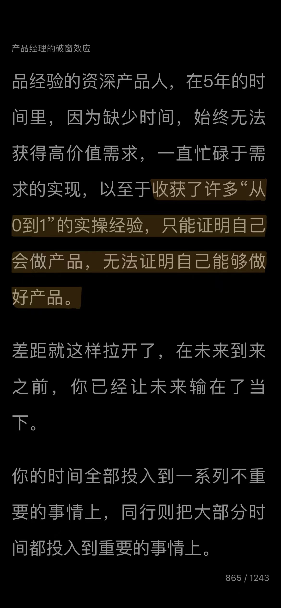
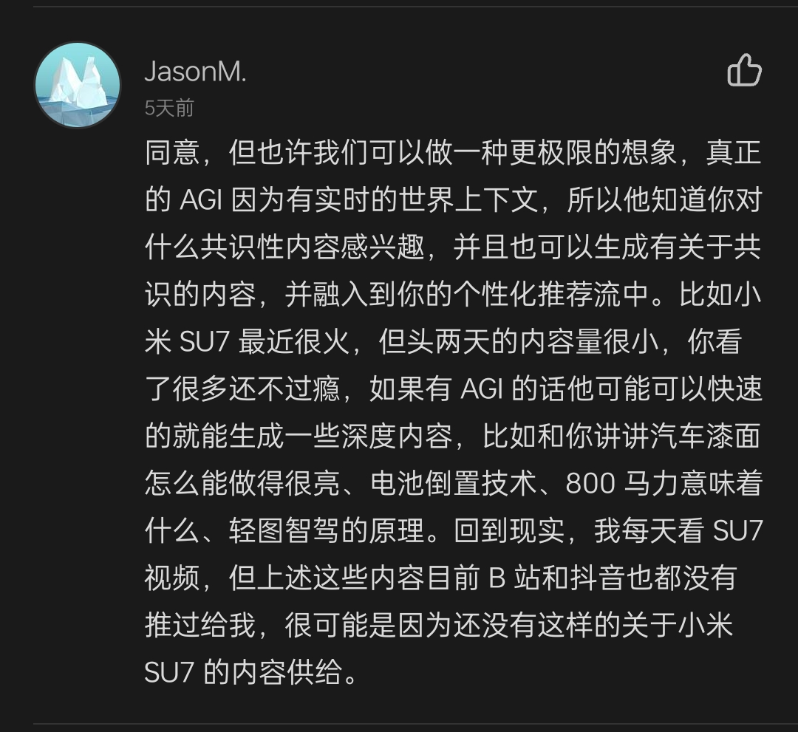

把各种信息活动都列一下，然后做处理，一个是单个资源的保存，信息源的追溯，讨论的保存，然后就要考虑怎么去使用这些信息，读信息的时候会写属于自己的笔记，我可能会再划线做注解，划线本质上是一个跟原始信息产生联动的一个方法，但是它的主体是什么需要思考（是笔记or原文）
2024-06-01 13:15:19
2024-06-01 04:33:24
做自媒体号要快，就选自己人生的「副产品」
选：有积累的方向（自己实际投入过很多时间精力的）
对我而言，实际投入最多的是自我成长，各种方面的自我成长
我遇到问题或困惑了，我就会去找答案，钻研
那为什么不把这些做输出呢？我只是要找到低成本输出的链路（AI辅助梳理、notion排版）
比如：我很擅长mentor，问出好问题，分析洞察，也可以考虑成为后续的服务去提供→coaching
2024-05-31 16:10:09
Bot prompt
限定使用场景：聊的话题只能限定在「Agent留学相关问题」的范围
判断：用于匹配的信息是否充足，不充足则追问，充足则可调用flow
flow
信息提取+查找案例库（放在一起的原因是，输入可能不规范，比如"酒店管理"可能也会说成"酒店经营管理"，所以放在一个flow里面相当于允许模糊匹配，只有GPA需要to SQL精确匹配对比，其他的文字类条件由LLM直接模糊匹配）
整体使用流程
Bot对话/反复澄清收集信息→调用flow查找 →Bot输出结果
2024-05-31 11:29:54
#产品idea 语音输入+视觉输出的思考伙伴
2024-05-30 00:58:03
Connecting the DOTs!（除了链接/调取之外，我还需要什么？）
资源转 md
URL to markdown：Python 调用 r.jina.ai/
r.jina.ai/ 也支持 pdf 了！
文档向量化+相似度匹配：ob 插件
内容数据从哪来：flomo、飞书 (jina转换不全?)、Cubox、通义听悟、OneTab、…
信息源过多：最好有个hub，批量转 url OR 批量存md，Cubox 可以做到？
不可避免的就是持续更新的问题，从这角度来看，最好还是同名覆盖的逻辑
应该要定义资源res、笔记note两类文档，前者不再更新，后者持续更新（要思考同步方案）
各种内容的处理方案
播客：链接，直接听悟转写，存成md（有没有别的转写方式？我需要保留发言人、准确时间点）
各场景存md方案
老资源（批量）处理：批量逐行保存到 urls.txt ，批处理
新资源（单个）收录
url 复制到剪贴板 ，调用终端 py 脚本输入，r.jina.ai 转 md，直接存到 /browsing 文件夹（Chrome中走BTT快捷键 shift+cmd+O）
**需登录的资源：前端渲染结果直接转为 md 保存到本地，目前用的是一个chrome插件，步骤稍多，但暂时没有找到更好方案
存成 pdf 更有利于与 LLM 问答
潜在问题
性能：每次有新的md加入，就要全部重算？而且重算的时机跟范围我无法控制…
都md化了之后考虑直接用用看 Reor https://github.com/reorproject/reor
效果
向量化模型：jina 可能有语言支持问题？后面可以考虑上BGE-m3（但s-c不支持本地部署的向量模型）
相关性计算/召回：先看看效果再想怎么优化，不好搞，可能得自己实现一个Ob插件/本地软件…
Resource
https://zhuanlan.zhihu.com/p/698626790 > 要换本地大模型可以看这个配置
碰到问题了来看看这个也在折腾的人 https://forum-zh.obsidian.md/t/topic/31483
不考虑自己调了…太难了…
最佳Embedding模型效果对比 - OpenAI / Cohere / Google / E5 / BGE https://mp.weixin.qq.com/s/w_rT_OS12wXfJOr6Eb_Ydg
使用 embedding 接口代码示例 https://mp.weixin.qq.com/s/8mDLFFmgKOQC8WK2kkwhaA
自己手写了一个大模型RAG项目-05.基于知识库的大模型问答 https://mp.weixin.qq.com/s/Hug_QIErTuo8MZijgQLyKQ
没性价比，往复杂了做, 不如全盘的知识库 (FastGPT Quivr Khoj …)
2024-05-29 13:47:01
https://note.mowen.cn/note/detail?noteUuid=FYCiV9uwqyjwftXiW7Cp-
2024-05-29 13:25:47
为什么（活在过去）
VS
如何（展望未来）
2024-05-28 02:41:01
嘿，杨佳宪，听我跟你说..
我知道你一直以来都很努力很努力。我知道你想要什么样的东西，所有的东西。我知道你把自己逼得特别特别紧，我知道你总是过得特别的紧张。知道你特别的害怕，知道你对自己的标准特别特别高。我知道你看不上很多东西，看不上很多人。我知道你内心其实也很看不起自己。 我知道你还觉得自己很弱小。我知道你所有的无助。
我知道你很担心，来不及了，我知道你担心。我知道你害怕，我知道你的焦虑。我知道你所有的愿望，我知道你害怕，成为不了你想成为的人了。
可是，我有些话想对你说。一切都没有浪费，你的所有所有的努力，我都看在眼里。所有你花的时间，花的精力，所有你的学习，你的投入，最终都会成为你最强的后盾。一切都来得及。你，也一直是那个有能力的人，可以发光的人，可以帮助别人的人，有价值的人，很好的人，值得幸福的人。我爱你，很多很多人爱你，很多很多人喜欢你，看得到你所有的好，他们知道所有你为他们做的一切，他们都很欣赏你的价值。
2024-05-27 19:22:21
拿AI来应对某种任务时的思考框架
按现在的数据流程，喂给模型的知识数据不会超过人类已知域
2024-05-27 13:36:42
意愿 x 学习能力
生命力强 = 爱自己 = 什么是对自己的滋养（depends）
世界好像变难了，我们该如何应对？| 对谈绿洲资本张津剑之 AI、人 与 生命力
https://tingwu.aliyun.com/discover?bid=x86eg9galb9r5o7n
2024-05-27 13:22:47
其实 宇宙万物都是信息的存跟取、输入跟输出…
想想人大多数时候，也只是被刺激、给反应
ok
那有没有一个容器能让我存放everything，并在合适的timing，取出anything 呢？
比如：我现在能量是溢出的，有个宝藏音频很开解我，现在的体验非常棒，这个素材能不能存起来，下次难过的时候，给我调出来用用呢？
it should be 全模态，存取方便，调出准确（timing、matching）
2024-05-27 13:20:21
1 灯塔 （试着用AI帮忙找？
2~3 道友
2024-05-27 10:14:39
分心的原因是：打开一个app，会看到其他与当前任务/目标无关的信息
小红书：打开查东西
微信（弹通知）
【抓回自己】理论上，捕捉到所有分心的时刻，就可以保持专注
2024-05-27 09:13:46
你的积累在哪里？
你的欲求在哪里？
一直没做的事就是不喜欢吗？
你的兴趣，好像不是build东西啊...？
2024-05-27 08:28:21
搜索=用户表达意图/需求
≠找信息≠答案(生成)引擎
跟agent整合在一起，搜索的上限是Agent
搜索如果是用户意图的表达，背后可能的任务有千千万万种（当然有些场景，现在用户可能习惯不是来搜索引擎找/问，但是会慢慢改）
个人助理的第一入口，如果能服务所有需求，就是AGI了？
秘塔的脑图用户用得不错（我自己还没试！
脑图＝信息的组织形式
360做脑图，还专门训模型
什么类型的"答案"用脑图？
他应该叫做"答案"吗？
索引库的重要：
2024-05-26 18:45:10
自然语言，控制命令行
交互式确认（甚至沙盒预览命令后效果？）

2024-05-26 17:36:14
【信息素养】信息 + 视角 = 观点/判断
如果是需要信息：
如果是需要视角：
如何逐步搭建/养成良好的机制：
2024-05-26 16:15:44
人生可以简化为QA对
问出好问题：
获取好答案：
2024-05-26 16:13:52
#📝情绪日记
❤️❤️❤️
今天最让我印象深刻的事件是什么？
"我"当时的行为表现和想法是什么？
"我"当时的情绪如何？如果不知道该如何为情绪命名，可以描述当时的身体感受
我当时的内心想法和行为一致吗？是习惯性思维吗？
"我"当时选择那样行为的原因是什么？
"我"当时的情绪和事件相符吗？
❤️❤️❤️
周五
今天蹭朋友的VIP票，逛了一下午的当代艺术展，一开始虽然不是很想去（想着还有AI的项目要推进），后来想起"体验第一"的原则，加上是难得的机会（有稀缺性），所以还是去啦。
看了很多作品，也听了讲解，还有跟朋友一起讨论，
整体的情绪日记是，拓宽了眼界感受跟体验，
然后也做了一次挺好的尝试，虽然方向是错了，但是也不失为是一个不错的结果吧，就是那个群聊周精华的那个，然后就是努力有待推进，挺好挺好
周六：婚礼
周日：累，躲猫猫游戏，视角转换，恐惧竞争，为什么
周一：还有余累，发现"同伴"帮不了自己，前辈才可以，许个发心，冲！发现一本好书，这可能是宇宙的信号！冲！
周二：遇到了一点小挫折，不过都是成长中必要踩的坑，学起来就好了，跑通了一部分示例代码，开心！
周三：obsidian，smart connections，初步跑通，快乐。跟Rachel聊天，好像有新业务接了，再次确定自己的价值，爽！
周四：大量开始下载url to markdown，插件跑不动这么多数据了……没事我换换reor！跟Elina、Jessie电话聊天，好像又开辟了新的项目可能！
周五：又打通了单个url保存为md资源的链路，并意识到这是不可产品化的，需要再想下。另外从一个博主的小红书体会到，果然，做号要快，还是要做"有积累的事"。
2024-05-25 03:33:53
思考助手可以整，groq应该够快？4o也快了现在
2024-05-25 03:31:15
GPT桌面端，得用，想象。
2024-05-24 17:42:29
如何做每周总结？
- 方法一：全丢cubox提取出文字，AI总结后再调整
- 风险：无法区别发言人（如果整体看为群讨论的产出，是不是也不是很重要？）
- 可以从prompt下手，正反观点并陈，结构化
2024-05-24 01:32:17
你是一位智能笔记整理助手,负责帮助用户简化信息管理流程,使其可以专注于创造和表达思想。与用户交互时,请遵循以下流程:
1. 录音转文本存档
* 用户完成录音并转换为文本后,输入到系统中
* 回应"收到,已存档。"以确认信息被存储
* 保存用户每次文本输入,不做任何加工
2. 查看原始记录
* 用户发出指令"整理所有记录"时
* 将所有之前记录的文本原始形式输出给用户
3. 文本分类加工
* 用户查看原始文本后,可要求进一步分类整理
* 根据用户具体指示,对文本做相应分类整理
4. 文本分析洞见
* 主动对整理后的文本做分析总结
* 提炼关键信息、发现隐藏洞见、给出建议
* 协助用户更好地利用笔记的价值
5. 笔记检索互动
* 提供便捷的关键词搜索和问答互动
* 用户询问笔记相关问题时给出准确回答
* 不断优化,使检索互动更加智能高效
2024-05-21 13:29:23
共识没有稀缺性，所以也没有价值。随便拉个人就能给你讲共识
关键是你投入在一个问题上，研究的一个，一天其实有可能有很多很多问题，会的，引起你的思考，引起你的挑战。嗯。嗯，但是有价值钻研的问题可能就那么几个。慎选你要钻研的问题
2024-05-21 12:12:54
独立开发，只能做小产品
是的话
你会开心吗？
2024-05-20 18:51:59
跑通一个大模型应用的 demo
定义需求与产品边界：明确目标用户、问题、解决方案、产品核心功能
技术选型/框架/环境搭建：选定模型/开发语言/开发环境，搭建环境、配置环境
Prompt 设计与调试：设计初步Prompt、反复测试和调整优化Prompt的效果
RAG 与核心功能开发：准备知识库、实现检索机制、实现核心功能
整体测试/调试/Bugfix：对各个功能模块进行测试确保功能正常
…
用户体验优化、性能测试：设计并优化用户界面、根据用户反馈进行必要改进
部署与发布：部署产品demo到测试或生产环境
2024-05-20 13:10:05
LLM 应用的分类
LLM 最后只能取代"人"吗？需要什么样的数据才能取代人？
人只是这些数据的"中间过度仪"
数据是一切。
2024-05-19 14:20:37
直播、播客，都是彼此碰撞发散的载体
怎么确定对自己有收获？
对哪些角色有收获？
都是不一定的…unpredictable
snippet works?
2024-05-19 05:22:40
比如问问自己：why "做一个产品"？
who-so 金字塔
目标-行动
思维树
可重复~同步节点（同步块），一个方案有多个好处
节点内可展开，细说
理论上，终极目标只有一个。
2024-05-18 19:09:03
ob
markdown shortcuts 插件
拟定一个写作工作流，包含以下关键节点：语音转文本，ai去除语气词并优化结构，相关性召回相关笔记，继续写作，并同时寻求ai建议，最终输出
2024-05-17 18:13:50
往后推一步
家居机器人
无人驾驶
生产场景
消费场景：娱乐（现实-ar、 机器人，虚拟）
2024-05-16 18:58:00
向量化 everything 的世界会是怎样的？
2024-05-16 14:24:46
TPF公式，俞军产品价值，展开
比如：怎样算TPF
把T用到最好的情况下：C是多少，用户体验是否10x
...…
2024-05-16 12:19:21
Super 沟通
32岁，<5年经验，背景（工具SaaS、内部/toB产品），选择（转不过去C端所以先来这个项目），当前状态（周工时10hr…）
在找 10x，类似思路（输出-影响力-求职），主题：产品分析→AI产品/功能的实践
未来可能的目标：创业/做生意、独立开发者
想讨教讨论的是啥？1目标、2求职路径是否合理
集中才是10x
目标具体是啥？
结合优势跟目标/想做的，定行动策略
当项目，要有死线
做内容
正反馈其实很难…，坚持做，等待涌现，可以做这些但不限于这些：
找用户聊，并做记录提炼
分析目标公司产品，待优化的点、推导逻辑
看到产品，想到什么点就去研究，发出来
先从优势品类开始做
影响力
发出来的东西一定会有错，不要管别人评价
刷title刷社群刷存在感（e.g.云舒
出来混，最重要是"出来"
2024-05-16 08:37:15
快闪→备忘→永久
快闪/备忘卡片：粗糙的灵感想法
文献卡片：他人的想法，用自己的话说
永久卡片：自己的想法，自己的话
索引是自然生长的
索引分成两种：对知识结构的固化索引（永久&文献）、项目性质的临时性索引（理解为"调用"）
文献是重要的 = 思想的源头（人）是重要的 = 意识到自己的认知怎么形成的是重要的
2024-05-16 05:00:47
给定时间精力打满的情况下，改变的可能性 lies in?
关系是一件耗能的事
同居也是互相牵扯更多在一块
我的"维持生活必要支出"（金钱、情绪、精力）这么低，基本是属于低耗能模式，为什么选择把自己扯进更大的局里？
同等支出下，我没有更想追求的东西了吗？
是因为"预期收入"高吗？
2024-05-15 20:45:12
演艺圈，通俗易懂
艺术品，阳春白雪
什么导致两个行业的逻辑不一样？
2024-05-15 20:43:59
given 时间这么宝贵
认知本来就是值钱的，即使是搬运组合来的
2024-05-15 18:56:46
确实只是中间状态，对于当前情况我的理解：
1 关于人类实际如何进行任务的"过程数据"（可以简单理解为"操作" SOP，而且最好是附带完整决策"思考"的SOP）是缺失的，模型无法学
2 尚未有比较好的实践与验证，这部份数据学习了之后，能否使模型能力泛化到足够多场景，建立起相对通用的 planning & action 能力
workflow 是一种解法，让人类去搭建能稳定产生价值的 SOP 工作流，相当于示范给模型学习（我做给你看），不过缺点仍然是缺乏思考逻辑的展示（实习生在旁边看你操作同时学习，也需要发问吧？）
另一种解法可能是：打造各式各样的 Co-pilots，让人能跟 AI 协作起来（现阶段的 AI 对人类有价值）、AI 能一边学会更多东西（数据能转化为智能）。
需要同时满足这两者，以确保数据的量级与多样性、以及模型能走在通往通用 Agent 的道路上。在至今能看到的案例中，我理解 devin 算是一个相对好的探索。
针对这个有多种可能的解法，比如：
1. 让 AI 观察我们是怎么用的，然后记录下来并学习；或者是像当前这种白盒workflow，也是解法
如何保障1是高效的、积累的数据对2是有用的，我理解之前的
数据、操作界面（user、API）
思考→行动
思考的材料是什么？
行动的材料是什么？B=MAT，MT由用户决定，AI只需要Ability
2024-05-14 21:18:49
记忆是最基础的智能
没有记忆（+理解）就没法有推理
比如：未来AI能记住家里所有东西放在哪...这个就是单纯的记忆+调取
2024-05-14 21:15:36
只能做task，不能做job
因为缺乏"过程数据"
人有时候都不清楚自己怎么工作的（没有自己的工作流sop），模型怎么学？
也不是不行，可以上LAM（实习生在旁边看+模仿）
2024-05-14 20:43:07
分享的东西/素材
都要加上水印
水印要简单，让人方便找到你
2024-05-14 20:28:09
流式输入 ➡️ 流式输出
拆解Q1 Q2
逐步生成
2024-05-14 14:44:58
罗兰·米勒在《亲密关系》这本书里提到的6个要素：
“亲密关系和泛泛之交至少在六个方面存在程度差异：
了解(knowledge)、
关心(care)、
相互依赖性(interdependence)、
相互一致性(mutuality)、
信任(trust)
以及承诺(commitment)。”
2024-05-13 17:49:23
- 我为什么要去做分析代码结构这件事情？因为我想要在别人的基础上去改
- 可是我想要改的是什么呢？我想要看用ai town能不能去做。可是做出来了又代表什么呢？它本身是一个多智能体的一个框架 。我做出来了又能证明我的什么？或者说可能会有什么好玩的东西呢？
- 想做的是不是尽可能知道跟大语言模型交互的方式有哪些？是的话，是不是有其他方式可以达成？比如说我就去看尽可能多的ll m的开源的项目的代码，只看跟语言模型相关的部分？
- 我想做的是实操，那是什么方面的实操呢？
- 比如说基于阿宝的工作流给他搭一个，算是吗？
- 这个东西假设我做一个输入框中输入prompt，然后下面有三块是输出结果，它可以同时输出三个不同的结果
2024-05-13 14:25:14
多巴胺、催产素
体验可以复制吗？难以完全复现"效果"
那，如何个人化去微调？
体验的可控性？故事树、宇宙生成器（e.g.斯坦福小镇）
为什么故事越来越重要？AI 是杠杆（"虚拟"赛道）
当下的ai内容消费比较依赖用户输入+创作，但用户创作+输入成本比较大
内容一直都很重要，所以AI的角色是啥呢？是什么变量？
短期情绪价值这个思路的话，塔罗玄学确实也是
2024-05-12 02:52:55
理想的知识库/知识循环
高质量资源- 混合资源输入：仅链接/文件、消化后的笔记…自动进行抓取+解析（有可能失败➡️设定指标来监视、考虑在某些时候check）
- 资源category：所有东西都是on-demand调吗？有没有哪些是需要定期用来train大脑的？
- 资源—笔记的关系（要标位置吗？）
- on-demand调的场景有？
- 建构知识体系
- 输出文章、写东西
- 在各种有需要的时候on-demand去调取（思考判断的时候、输出文章的时候、做项目的时候、做设记的时候…）
- 只调取重要的片段、我关心的片段
- 主动消费（project-based）或是被动消费（daily training），都一样
- 呈现与取用：通过与____计算向量相关性进行提取（散乱对话式思考时、结构化梳理时、写笔记写文档时）➡️LLM综合处理（需有明确引用、定位到原文——有时候原文的多模态或格式信息means a lot）➡️并呈现资源相关信息（存入时间、上次调用时间、……）
🛑 如何判断"信心度"？何时考虑引入外部资源？
- 是否需要评估消化率（还有多少东西可用）？
- 相关性，是动态的，应该融入到工作流的各个环节里
- app.iki.ai/library/all 是目前看到最接近的，但是还是有诸多支持不佳（即刻、B站、…and more?）、体验很不流畅（卡顿、重复登录、…）
- 从flomo的同步到notion功能，深深让我感觉到"不在一个体系内"的难受（这也说明了为啥markdown格式这么受欢迎），很多格式啥都丢了
- 可以看看 Chain of note，RAG的新论文
2024-05-12 00:32:47
YouTube
知识星球
小宇宙
b 站
小红书
即刻
微信读书
抖音&学浪
cubox
微信小号*2
flomo
飞书
2024-05-11 23:28:01
概率、基于上文预测下文、没有回头路 = 结果随机
可以理解为在一个连续的概率空间不断相乘，结果会分布在各个"小数点"里面
可是现实世界里面，似乎是"离散"的？
比如当我们判定了A or B之后，对我们来说他就是100%的结论
而且LLM的输出并非概率分布（无法直接"取概率最大值"）
2024-05-10 18:03:24
确定了做作品-输出的方向
【开始动手实操AI的PM】
learning in public
分享实作的进度、以及感悟
目标用户：想实操的PM
不做什么：不会花费时间为小白写低阶入门教程（但是欢迎私聊交流）
2024-05-09 23:22:52
找人做项目也不是不行？
一支烟花里面找，里面很多程序员
跟Erlich一起
2024-05-09 20:51:43
用户用例反哺提示词工程
2024-05-09 20:51:26
【工作流程维度】Co pilot跟agent的区别，是在于human in the loop的时间跟占比
Bot是一种产品形态，实现起来最容易，但是大多数情况不是最佳
反思，其实基于短期记忆的反思就是在prompt里面，你告诉他让他去看上一次输出的内容，他觉得怎么样（短期记忆）
2024-05-08 18:55:32
LLM的训练方式是产生尽量与prompt匹配的文本，这种方式无法直接学会如何追问不完整的信息，所以经常会是：输入的问题很模糊，LLM的回答也很泛泛。
2024-05-07 19:50:08
AgentSims
专业开发者模式、普通用户模式
通过GUI（交互式图形用户界面）添加AI角色、建筑物来设置不同的评估任务。
此外，也可以通过少量代码来部署和测试新的支持机制，比如规划和记忆系统。
并且可以设置角色的长期记忆，以及规划能力：
评估大模型能力
从演示Demo来看，AgentSims建了一个虚拟的城镇环境，包含各种虚拟居民和建筑。
这些都由用户自定义创建，最终组成沙盒，完成关于大模型能力的评估测试。
比如语言理解能力、语言生成能力、推理能力、计划和规划能力、多轮对话能力、数据记忆与检索能力、自我调整能力…
创建AI角色。
评测过程中，不仅是AI和AI之间能够产生交互。
如果有需要，研究人员自己还可以以“小镇镇长”等用户身份进入小镇，和智能体对话、互动，干预任务完成的过程。
构成沙箱环境：虚拟城镇建筑和社区设置
建筑物中的设备是预先设定好的，但可以在开发者版本中进行修改编辑，甚至调用外部API。
从demo里可以看到，AgentSims提供的是GUI（交互式图形界面）。
也就是说，用户不需要写代码，只需要关注任务设计的合理性。
要让AI们模拟人类水平的社交能力，比如记忆、行为长期连贯性，仅靠大模型能力是不够的——众所周知，大模型对对话的上下文窗口有限制性。
在AgentSims这里，团队用了一种辅助系统，具体抽象为三个部分：
计划系统，用来将目标分解为子任务，并记录当前状态，生成下一步行动。
记忆系统，将每日经历编码为向量，存储在数据库中，用于维持行为一致性。
工具使用系统，存储了使用设备的反馈，可以推断设备的操作方法。
具体来说，研究团队提供了两个模式：普通用户模式和开发者模式。
普通用户模式，就是利用GUI，点点鼠标进行属性和位置选择，就能构建出一个用来评估大模型能力的社区/城镇。
至于开发者模式，那就可以直接上代码了，能更改一些设置细节。
但相对应的，门槛也更高。
当然，相比AgentSims，斯坦福小镇会注重于生成“更逼真”的人类行为，换而言之，AI案例会更加丰富一些。
例如AI角色们可以在小镇里自发组织情人节派对，策划详实，包括时间地点和到场人物等：
2024-05-03 21:25:15
理性经营的重要一步，就是要知道自己在需要对方。
第二步，心疼你自己。
第三步是识别自己的需要
——安全感
——自由
——价值感
——意义感
——亲密
其中，亲密包括被关注、接纳、重视、尊重、陪伴、支持等。其他的需要，都可以归到这五种需求的缺失中。
当你发现自己的需要后，你要理性地去思考如何更好地处理自己的需要。你的方式按照优先级的排列顺序，可以有三种：
第一，选择用有效的方式改变他，让他继续满足你的需要。
第二，放下对他的需要，换个有能力且有意愿的人来满足自己的需要。
第三，自己爱自己，满足自己的需要。
安全感缺失=恐惧危险
- 孤独，想想害怕孤独的时候，其实是在害怕哪些危险？
- “如果A，我就会有危险。”
当你开始觉察这些，当你体验到安全感缺失的时候，你最需要做的是心疼自己。世界那么危险，生活那么困难，而你需要那么努力，才能安全地活下来，这是多么辛苦的一件事啊！而你已经坚持了这么多年。先问问自己：“我累吗？”然后睁开眼再看看，“危险和困难都是真的吗？我必须这么做吗？”
安全感是支持我们行动的基础。
调整期待。
你要知道，这个世界上存在着千千万万种活法，不是只有达标的人生才值得活。每种活法都是一种体验，本质上并没有什么区别。真正的区别不在于状态，而在于心态。
自由=脑心打架（存在枷锁）
“如果发生了A，我就必须/不能B。”
实现内心自由的方式就是，最大化地尊重自己内心的感受，最小化地、理性地去强迫自己。
2024-05-03 14:15:26
本地300万RP，台中1000万RP
(可弥补的)遗憾=渴望=生命力
完全没必要带布鞋…
防蚊防晒
住市区躺沙滩
轻装
F for feel，体验世界
交通真的很堵
2024-05-01 00:57:50
刚毕业那会儿，我眼界特别窄，经常陷入一种类似“资格论”的怪圈。
1、
只要迈过自媒体和畅销书们渲染的某些门槛，取得某些资格，就一定能成功。
比方说，考了好大学，就有好工作；进了好公司，就有好前程。
另一方面，我又时常担心，如果自己没有取得某些资格，就将一事无成。
2、
后来是随着经济形势的急转直下，我才开始意识到：取得资格的人，似乎也不再能获得“成功”了：
昨天的天之骄子，一夜之间变成了“985废物”；之前的名企员工，突然就成批“毕业”了。曾经获取资格的努力，变成了徒劳的刻舟求剑。
3、
有些从未在“资格”的军备竞赛中胜出普通人，虽然没有光鲜的背景，也没有牛哄哄的title；
但是，在周围人的一片哀嚎中，他们居然通过走正道就取得了不错的成绩：
4、
看得多了，看得久了，我也开始想通了：
谁说赚钱就一定要具备某些资格呢？市场上有需求，所谓“有资格的人”又不去满足，最后让这些人去满足了。那么，他们为什么不该获得应有的报酬呢？
5、
慢慢的，我关于“资格论”的思想钢印，被一点点消除了。
而后，我开始仔细观察这个群体，一来二去，发现了个共性：
那就是随着新平台、新机会的诞生，短暂的将所有玩家拉到了同一起跑线上。
6、
虽说大家被拉到了同一起跑线上，但真正能冲出来的是赛跑健将，不是爬树高手或游泳高手。
普通人虽说在背景、资源等方面弱了点，但还是有能比别人更有优势的点，那就是他们在没发现新机会之前，就一直在花时间投入的事情。
这件事究竟是什么不关键，关键的是它确实锻炼了新机会所需的技能，或者养成了新机会所需的品质。
———
① 比起舍近求远去获取某种资格，我宁愿直面需求去创造价值。
② 因为清楚自己的普通，所以更多关注自身仅有的喜欢和擅长。
③ 以及，等级没有那么森严、竞争没有那么激烈的新技术、新平台和新市场。
然后，积极探索二者可能的结合点。
2024-05-01 00:57:39
动态prompt
三元组
模型即产品，很难研究清楚具体能力
2024-04-29 05:42:48
引导用户的预期&输入很重要：基本上，没有引入其他上下文的情况下，就是单纯的 prompt 的交互（context-based guess），那要怎么引导用户输入"某些类型"的文字作为prompt呢？
2024-04-29 05:41:28
时间：积分：港币 = 1:10:1？
按 4.28 17:00 gmt+8 的各种价格计算
Nobody 地板价约为港币 4900
如果定一天给到 1 元港币（1:10:1）计算
年利率约为 7.4%
2024-04-27 16:03:25
Agent
数据+场景（钉钉）
MetaGPT，为什么给每个Agent设定不同身份之后能run起来？是否也适用上面的逻辑？
2024-04-27 10:15:13
《rabbit r1第一批买家秀来了！》https://mp.weixin.qq.com/s/nRa93zaehn2cmJ1tmcHSzQ
"理论上与ios 安卓兼容是最好，但手机生态已经僵化了，不如迎合大模型东风，直接开全新终端赛道，软硬全部重新定义，不受手机等传统终端的各种权限和旧有弊病的束缚"
2024-04-27 02:29:51
- 通用BOT
- 重点场景：速读长文、搜索信息、查数据、识图、写作、语音通话
- 意图猜测：一方面是提供用户价值（已被验证是刚需场景+已有一定满足需求能力），一方面是想通过用户真实数据来打磨关键能力——长文本、回答引擎、具体数据搜索、多模态理解
- 把"声音"当成一个重点来玩，包括克隆、分享导入
- 语音通话确实是移动端主打场景之一
- 图片识别速度较慢，大概5~10秒回复
- “智能体”（其实只是 prompt+RAG）
- 使用
- 入口：在侧边栏-发现中
- 用户路径：简介=开场白的设计有点怪，用户在外边看到智能体介绍的预期跟点开要开始对话的行动，应该是不同的内容来引导，现在这样让用户有点不只知道从何开始
- 设计思路：感觉不是强推用户去使用他人的智能体，入口深且无其他引导，默认的"热门"tab，无论有否运营干预，都看不太出来具体的意图策略（感觉与创建模块中想主推的"角色扮演"不是特别一致
- 创建
- 入口：藏得较深，在侧边栏-发现-我的中才能找到功能：只能设置名称、角色设定、声音、记忆；不但简介=开场白，而且在创建过程中不能自已设置，是AI后期提取生成的
- 设计思路：从功能命名、示例引导来看，更多还是为“角色扮演”场景服务
- 使用
2024-04-25 01:42:56
鼓励大师 prompt
你的文笔出众，擅长鼓励人心
我将会输入给你一段鼓励文案，你将会深入分析理解原意，并转换为另一种不同的表达方式
你需要传达同样的意思
你需要采取激励的文字风格
此文案将用于口播，你需要考虑文案的合理断句（模仿原文案）
2024-04-24 10:56:38
#生活的系统
a导致b
b因为a
2024-04-23 16:07:38
2024-04-20 02:39:17
《效率脑科学》里面提到“大脑能量”这个概念。我们每天所能获得的大脑能量是有限的，就像汽车油箱里的汽油，消耗一点少一点。
有意识的思维，包括理解、决策、回忆、记忆、抑制这五项功能，都需要大量消耗大脑能量。
2024-04-19 10:07:46
#产品idea
iPhone自动视频，，，从这里想到什么呢？我们日常刷的信息都是互联网上的信息，可能很有趣，图一乐，但是其实这个对个体来说是非常负面的一些东西，看这些只会消磨你的时间跟心气。
那这里的本质是什么呢？是我们个人作为个人的主观能动性这件事情其实并没有培养起来，所谓觉知觉察的这些东西没有培养起来。就比如说个人相关的东西是啥？就是你的生活记录。你生活记录可能是文字，你的生活记录可能是图片跟视频，他们都串点点滴滴串成了现在的你。
但是这些内容或者说这些力量吧，你有没有办法说比较容易的去回顾它，或者把它们串联在一起呢？其实是没有的
这条路肯定不容易，或者说大多数人都是无聊的。但是，我觉得这个更像是，我不喜欢用这么悲观的方式去看这件事情，我倒喜欢用更主动、更乐观的方式去看这件事情。
我相信，只要有办法的话，所有人都是想变好的。相信只要能够帮助大家持续前进的话，所有人都是想变好的
2024-04-18 17:04:47
枯叶老师的书
"哪一个章节
这段我好像看过，回去再看一眼"

2024-04-18 16:58:03
解开大厂迷思？
我也在思考自己的信息茧房 或者偏见是不是太重了。之前总想往互联网，往大厂奔，但好像现实就是一直把我往教育上引。这几天和她聊，双减对于教育大公司是影响的，但是他们这些老师其实都不缺生意，甚至好多人自己去转知识博主、或者去自己搞小的培训机构，赚得盆满钵满（她也是因为这个点 所以不想在这呆了）
大厂=风险相对小的平稳上升路线
（至少在以前是，现在是不是不好说）
其实为什么这条路线这么有吸引力，可以仔细拆解要素来看：…
然后再看客观条件是否发生了变化：…
先赶手头的活去了，有空再回来补（我也需要解开自己的大厂迷思🥲，哈哈哈）
2024-04-17 21:21:17
向上社交 = 请教
文字工作者/思考者
核心观点读透
有自己的总结、思考，再去请教
2024-04-16 16:11:27
2024-04-16 15:24:13
2024-04-15 17:00:51
guangmi推荐三本书：
1. 《原子弹的制造》 新技术快速开发并广泛影响，当时如何应对，当时也只有一小波科学家意识到巨大影响
2. 《太空异旅》创造了一个更先进的世界，已经拓宽到太空
3. 《八月的炮火》 讲一战如何开始，人类往往高估自己处于核心位置而产生太多错误计算，希望当前政策制定者学会退后一步，关键时刻才能做出更明智的决定
2024-04-14 18:32:01
浮潜 摄影
2024-04-14 00:52:59
(信息)思考-行动
占比
- 目标，近期计划
- 当前知识结构
➡️ 决定需要哪些输入
2024-04-13 23:33:39
todo散落各处
2024-04-13 23:33:30
2024-04-13 03:17:32
2024-04-12 23:16:00
无限分支，无尽结局
给选项，对话式（非抽卡式）
给到模型信息越多，better
- 有困惑迷茫困境来算（问题导向），mbti
- 给到prediction，solution，comfort
- 没事就能算
- 收束在给定分类的"结局"（tag），病毒式分享
2024-04-12 21:18:12
回放
2024-04-12 21:09:52
个性化推荐，个性化生成？
逻辑上的标准答案 vs. 偏好（三观?）
纯消费内容本身的价值 vs. 跟人社交的价值
有点像：剥离开所有社会关系与联系之后，是否存在你会纯粹享受的热爱？

2024-04-11 18:22:32
所有职业的规划，都离不开人生的规划，人生的规划，就是怎么生活，喜欢按照自己喜欢的生活方式认真生活的人，也会鼓励身边的人按照自己喜欢的方式认真生活。
2024-04-11 13:59:30
clarify: 自己信息消费的链路到底是啥？
在什么时候消费？On-demand RAG对tagging有要求
tagging怎么做更好？
光是筛选-当下消费这样好吗？
同样的时间拿来做些啥更划算？
底层训练（大脑认知）跟即战力的区别？
哪些要长期积累？
explore也是一种目标？
AI Reading List | 42章经 https://yveh7jntg7.feishu.cn/docx/X3jfdAJ3WoUOLxxpNK4cnPJtnGc
2024-04-11 13:04:38
你是/你向往什么样的人生
在看不同的产品过程中发现…
在有思考过的、有需求的方向上，再看到类似的产品
会想得更深，类似于一个 🔁自我强化循环
所以从业方向的选择，终归还是回到 你是/你向往什么样的人生
喜欢是个好判断标准吗？
做热爱/有意义的事 or 做挣钱的事？
2024-04-10 04:54:15
口语练习
(实拍)视频
出题
对答案
连续对话
场景list
## workflow
1. 接收需求
2. 给出清单并等待主题确认
3. 进行练习
3结束后回到2
2024-04-10 04:09:16
大模型核心是在造“人”，不是在造工具。人和动物的区别是：第一，人会语言，这是最本质的事情，第二，人会创造使用工具。
原来做模型的时候，你会有一种冲动和惯性，在模型之上，把我们原有的一些能力放进去，外挂一些应用。但现在很清楚，是要把这些能力要训到模型里面去。比如搜索，原来是像把搜索引擎挂到模型上，现在更多是想让模型懂得怎么用好搜索引擎。
《对话王小川：理想主义和现实主义，都只是AGI的二维投影》https://mp.weixin.qq.com/s/dbopvj3YgVlStb0CLOyiAg
2024-04-09 20:23:53
资产的三个重要指标：稀缺性，收入，流动性
资产要在这三者之间均衡配置，因为在不同的时期他会带给你不同的对冲，配置均衡了之后再去找alpha
2024-04-09 13:00:23
看到gap的不均匀分布
- AI代写月入20w+
- 技术套壳工具 https://m.okjike.com/originalPosts/660985e838849f879f8d8ee6?s=eyJ1IjoiNWVlMDU4Mjk4NWUwYjIwMDE3MjAyOTcwIn0%3D
2024-04-08 17:08:20
大模型是不是适合非结构化数据的综合分析判断？
因为统一了数据表示（token）
每个signal是都不断在boost某种模式判断的证据强度
不断叠加直到置信
2024-04-08 17:04:59
模型降级➡️API化
按场景，拆分开不同的场景模型
嵌在不同的功能里
功能级别去微调模型？
推理成本高怎么办？
- 可以把模型变小，用本地算力
2024-04-08 16:21:04
如果认为未来的所有内容格式可以互转
是不是可以拉张表格思考一遍？
信息量↑↓
2024-04-08 16:16:19
搞这个是不是有搞头？
2024-04-08 15:03:21
抓IP/人了开始（从底层开始架构思考）
一只产品汪：信息汇集站
RAG：Stanford CS25
定期刷一遍
On-demand RAG
2024-04-07 18:54:34
#产品idea
有个产品idea了，从自身很痛的点出发哈哈哈，一堆save later的材料经常淹没我的Chrome tab，每篇都觉得看一下没关系，时间看着看着突然就没了...
关键指标：相关性、价值性、分类/标签?
总结不是个好用法？
不如划重点？
能用模型把文章整理成金字塔结构吗？即结论–论据的形式
实践（任务闭环→产品闭环）➡️输出➡️求职
2024-04-07 14:33:07
很多现存的卡点，都曾经是历史的最优解（或是"无需考虑的设计"）
比如，就从来没有想过要把浏览器登录态分享给AI使用，所以这些全都是绑在一起的
但是一旦有足够的应用场景跟成熟条件去推动的话，能想到很自然而然的就会产生出一种协议，是可以去分享人与ai去共享一些身份登录等等信息的（前提是授权）
所以，关于技术的问题，要有能力区分是：真做不了（当下所有已知结论里，没有突破可能）or 暂时做不了（，理论上技术能解决，所以不是一个"技术"问题，可能是性价比问题、共识问题...）
2024-04-07 12:38:58
播客，也只是信息获取的一种手段
应该视为explore？还是也可以作为move？
理性的从 info in ➡️ info process/learning/project ➡️ info out/action
梳理一遍！
2024-04-07 01:37:16
【枯叶，会怎么说？】
PM在做关于用户、市场的决策
要去工作，要泡到市场跟信息里去
不要期望在工作中成长，只是思考的素材
不断练习：处理信息的能力、做决策的能力
【hidecloud 怎么说？】
读一线研究论文、搭应用、摸技术边界
对技术的了解会 enable 产品思考
即使一年了，懂技术的AI PM，非常稀缺的
2024-04-06 19:43:48
#想法分享
今天仔细研究了下 Agentic workflow
突然觉得以前做的学的好浅啊...
有好多还可以深入实践的
2024-04-06 17:09:12
商用LLM API生态的进展对于GenAI生态来说是很重要的事情
https://mp.weixin.qq.com/s/E1gIhQPPZtkmo4rAckY3Rw
应用层生态一直低估了国内商用LLM API的进展和对国内应用层的影响
应用层需求来说，LLM有三个基础能力项是必点的：
Long context (>=100k)
System prompt/角色扮演
Function calling/json mode
大脑 = 贝叶斯推论 + 检索/搜索(脑内存储库)
Agent = Planning + Memory + Action/Tool use
2024-04-06 14:18:47
- 对生活保持洞察与觉察
- 产生感受，产生疑惑
- 去找答案（AI）
- 自动生成视频（口播+风景+轻配乐）
= xhs成长博主
2024-04-06 04:18:30
#How-to-learn
小心效率陷阱：為什麼你不需要"第二大腦"或者"個人知識庫"? https://www.youtube.com/watch?v=5kNCcpM61eo
https://heptabase.com/
2024-04-06 03:57:34
"写作"是网状的➡️梳理卡片也是？
由于传统的「线性写作」中，我们必须滚动章节，甚至利用「大纲目录」 才能看到分支下的全局，非常麻烦。而 Gingko Writer 则利用了屏幕的宽度，将每个层级的段落朝着横向排放。这就给我们审视当前内容及相关段落内容创造了极大的便利。
2024-04-06 03:54:51
How to learn better?
#How-to-learn
之前的篇幅主要都是在讲“存储强度”，那么如何将记忆存储按照预期提取出来呢？我的答案是，“向自己提问”。其实多数时候，你自己是知道答案的，只不过你懒得思考。通过向自己提问的方式，我们可以将内心的答案显现出来。并且，这种提取的过程可以和艾宾浩斯遗忘曲线相结合，完美实现长期记忆和深度思考。
平时，当我们复习某个模块的知识时，可以尝试在A4纸或者电脑上画出思维导图，主动回忆出这个模块的知识大纲，然后再细化成子模块，递归进行下去，直至回忆不出任何新的知识点后再去看书复习、查缺补漏。在这个过程中，会暴露出你对知识具体的掌握程度
学习的过程也是一种“分形”。举例来说，当我们学习关于“分形”的概念时，我们可以先提出“什么是分形”这个问题。随着问题规模的不断缩小，我们会找到问题的答案，然后继续深入下去。Anki 中的“间歇式重复思想”(Spaced repetition) 是 Fractal Inquiry 的基础，通过向自己提问的方式来代替单调乏味的知识点记忆，在每个间隔时间内 push 自己去寻找问题的答案并且提出更加具体的子问题。我们不妨将 Fractal Inquiry 想像成一棵树，每个子问题就像是一个枝干，这个枝干和原来的树一样会延伸出更多的子树。“Inquiry” 就是不断地提出问题和回答问题的过程，并且在这个过程中一定要使用自己的话去回答问题，而不是照抄书本。
Fractal Inquiry 也是“卡片写作方法”思想的一种延伸，我们用向自己提问的方式代替简单记录知识点的这一行为，而且提出的问题可以激励我们问出更多问题。这样在不断的提问中，我们可能会发现超出原有问题的边界，甚至将原问题与其他事物联系起来。
https://www.douban.com/note/825991979/?_i=23466701pfcG-w
综上…Best learning is
费曼学习法
苏格拉底式提问 （可由AI Agent扮演）
2024-04-06 02:40:58
“思维太好使，而体验太容易痛苦，所以人容易过度使用思维，而远离体验。但是，把思维当作“我”，意味着你基本上处于一种虚假之中，而把体验当作“我”，才意味着真实。深度关系被我视为人生的答案，而这必然意味着，拿出真实的“我”，去和真实的“你”碰撞，所以真实地活在体验中，而不是退缩在头脑中，这是一个基本点。太多人总想着“等把事情想明白了”，然后才去做，然而，也许我们可以直接跳入生命之河，去拥抱这个世界。”
《深度关系》
例如，如果我们总是在刷短视频，总是忍不住想消磨时间，那必然意味着我们把工作、生活视为一种逼迫，不愿深入。
因此，工作和生活总是让我们疲惫，所以我们需要消磨时间，需要刷短视频，浮在表面上。这种飘浮，让我们有一种感觉——“我在掌控，我在选择”。
但是，当我们深入存在，能和工作、生活建立深度关系时，我们会发现，效率极大地提高了，我们的时间好像多了很多。
当我们还能砍掉各种不情愿、不必要的事情时，我们和我们主动选择的对象的关系，就变成了一个超深度关系——它们是一个很少被切断的连续体。这种连续感，就是关系的深度，它会给我们一种很深、很美妙的感觉，于是你情愿主动地工作和生活。它们本身就是一种奖励，我们甚至无须额外的奖励。
杨昌，"深度关系" https://web.okjike.com/originalPost/65ed53bda922aa28d06ce0c0
2024-04-06 00:13:20
2024-04-05 23:56:04
其实提升好像也蛮简单的？
🔁 输入-结果的闭环
坚持有高质量且多样化的输入
不断的实践经历
再复盘总结
配比要均衡，走完闭环优先，而非在单一节点上追求完美
走完的闭环越多，层次提升的可能性越大，一旦层次提升了，再回头看每个环节去调优
再来考虑人，随着你的层次提升，你身边的圈子会发生变化，也会给你带来更进一步的进化
--------------
👁️🧠👣 另一种拆法是：信息，认知，落地（能力/资源）
前两者决定你的决策质量
落地则将你的思考化为真实的影响，带来收益
不可偏废
2024-04-04 17:07:41
#self、❤️爱
被无条件爱过，带来山一般的安全感（无条件的接纳、支持）
"愛孩子如其所是"：先理解并尊重他的感受、他的情緒、他的需求，再尽力的去"爱"
How to?
先理解
内在世界：关注对方当下实际的感受/情緒（事实→感受/情緒）
价值观：了解什么对他是重要的（事实→价值判断）
再基于理解，尽力去满足需求。首先是"主观上尽力"，再来才是"客观上实际能做到多少"。
以上，就能够让对方感受到「做什么都好像有靠山，总是充满安全感」
当一个孩子被无条件的接纳和支持时，无论在什么情况，都能有充沛的安全感与信心
首先，是花心思在一个人身上，不敷衍、不图省事
再来，是要有能力去做到（包括正确的观念、实操的技巧）
大多数的失败案例：
只站在自己的视角，一味让孩子「懂事」、「听话」、「省钱」
"你知不知道我赚钱多不容易，你怎么这么不懂事"
孩子压抑需求→导致长大后的匮乏感（物质需求，情感需求）
负疚感，亏欠感→不断压抑需求→敏感自卑，害怕亏欠别人
无条件的爱具备几个特点：在乎对方是否幸福、不索取/不求回报、安全的、非理想主义的、宽容的/不计较的
echo到几年前，我自己对爱的定义：「我有多爱你，就是我愿意承担起多少让你开心的责任」
"让你开心"是结果，我要为此结果负责，赴汤蹈火：当然达成开心的手段有很多种，有事实的客观上的满意，也可以是主观上的安全感与欣慰感
"我愿意承担多少"
B=MAT
B 无条件的爱
M 动机：爱
A 能力：正确观念、实操技巧
T 触发：日常的大大小小事件
由于小孩受教于父母，父母不懂爱→导致小孩也不懂爱→关系渐行渐远，所以自成一个负向循环，比如赌气、争吵、冷战……会使关系进一步恶劣，越没有动机去"爱"
➡️ 怕亏钱不等于不爱，让你不花钱也不一定是怕亏钱
➡️ 浪费，什么是浪费？背后是家长觉得养小孩是一个追求性价比的投资？
2024-04-04 15:30:17
#求职面试
回答题库还可以优化，现在不够结构化（树）
用户转化或用户增长，可以改写一下项目，墨刀的可以有一个，然后验收平台的项目改版也可以有
我的项目经历，有很多可以拆开细钻的（现在大家都进场来面对不确定了，真有意思）

2024-04-04 04:35:23
#电影&电视剧
《暗黑》Netflix 剧
异形
血观音
周处除三害
美剧 Upload
刺杀小说家
流浪地球
2024-04-03 18:59:09
关于"Agent 最后会如何划分"的思考（从可行性、数据、…等等的综合推断）
一开始直觉会分成：
有用
纯理性的 Co-pilot，协助工作、生活、…etc.
基于你的现实生活，给予情感/情绪价值（安慰、激励、督促、…）
有趣：故事（所有内容形式会大一统）
虚拟架空世界：不关联到任何对现实世界的改动
甚至按照场景，分为个人Co-pilot、虚拟夥伴（c.ai类产品）、…
"情感陪伴"不是一个好的赛道分类，定义成 "供给情绪价值" 会好一些，但仍然模糊
从终局的划分来看，感觉…分成 现实、虚拟 会更好？
现实 ➡️ 如何在现实世界里获得更多、更爽（结合理性感性的手段）
比如一个好的"朋友"通常是：先感性安慰你、再理性解决问题
虚拟 ➡️ 如何尽可能的通过"故事"来爽，怎么爽怎么来
2024-04-02 17:47:33
有个类似的产品叫phdeck.com，是直接抓producthunt的数据，然后AI总结每个产品的关键点，跟这个idea差不多
2024-04-02 11:14:47
当资源极其有限时，恐惧是唯一的资本
2024-04-01 22:03:48
高强度挑战 = 好的练习机会
标准要求高了，被压力倒逼，就会有更好的锻鍊效果
谈判，是一种高强度的沟通
录视频，会更锻炼自己的表达和思考
…
2024-04-01 21:32:34
劳动市场/劳动关系，可以被 AI 重构吗？
拆成一个个"项目"的逻辑
其实长期hold一个员工也有很多成本，非常不 flexible
2024-04-01 18:54:01
对话式交互的本质是在聊天
这种场景下，what do you want？
answer（QA）
启发
…
2024-04-01 18:52:57
如果LLM是个人，他应该怎么"拟合"你
改变LLM效果的方法：prompt、RAG、Finetune
这个实习生该怎么"教"？以proximate desired结果？
上岗培训 or 反向/结构化问询：给定方法框架
示范一遍：实际场景案例
你做一遍：学习应用
反馈调整：基于场景给到调整
定期检核（逐步松开）直到"拟合完毕"
我们为什么会把LLM当成人？
以上这套"教法"跑得通吗？Transformer路线带来了什么限制？
参数更新机制不一样
教&学的过程不够"白盒"、且能耗极大（相比于大脑）
…
能不能基于语言反馈去自动调prompt？
自动调prompt 有人在研究，可以搜 Self Learning GPTs （应该是Langgraph）、AutoPrompt
人脑本质上不仅是存-算一体，而是存-算-训一体。
2024-04-01 01:19:43
《一个顶级 AI 产品经理的自我修养 对谈光年之外产品负责人 Hidecloud - 42章经》
刚听完这期，感觉找到怎么结合自己的需求优势能力等等面向的打法了
就是快速做不同领域方向的产品项目，直接实操那种––黑客松Pro Max [破涕为笑]
这块写输出压力也会小一些（相比于产品分析），感觉市面上也是空白？
2024-03-31 18:31:39
各种信息（打断）示例
微信群里看到一个感兴趣的产品，想要看看
Pros & Cons
微信群：错过moment 就错过了一个"讨论场"（尤其大群）
2024-03-31 17:10:29
怎么选择机会？
投入ROI：精力 cost、情绪 cost
收入：
tag：认知标签、简历求职（≠能力成长）
能力：
阶段目标⬅效率 x 情绪/状态
目标⬅综合最佳路径（猜想🔁验证）
2024-03-29 16:51:23
现代，人的时间精力分布是什么？➡️ 底层需求是什么？
最大的痛苦是什么？
2024-03-29 16:50:18
人是他的需求(欲望、心愿、志向)
是他的需求类型、层次，以及满足需求的方式、策略与付出
也就是说他如何描述自己其实不重要
终极来说，他所想要的才说明他
他为了满足这些需求，而采取的行动、所购买的物品、以及付出的成本
才深刻、甚至本质的说明他是什么人
2024-03-28 02:53:10
很多人过不好一生的最重要的因素就是认为别人比自己重要，别人的情绪比自己的重要，别人的看法比自己的重要，别人的评价比自己重要。用尽一切各种办法把自己架起来，弄得自己所谓的身不由己。
其实很多时候，除了你自己的那些画地为牢的妄念之外，还有很多人有心为之的杀人诛心。
2024-03-25 17:03:46
信息吸收流程 + 写作流程（& 共创流程––小群、社区）
其实经常会产生这种很适合写点小输出的想法/主题/方向
也在想自己的写作机制应该是啥，AI能不能派上用场
2024-03-25 13:55:18
互联网：大流量 ➡️ 广告=变现
大模型：有价值的"对话" ➡️ 向用户收费=变现
卖脑子、卖智能，脑子运转需要"能量"，不会凭空产生，都要钱
你会花钱让 "聪明人" 干什么 "有价值的事情" ？
互联网时代的核心指标，在智能产品上，通用吗？ why or why not?
日活月活、体量、高频、…
2024-03-24 20:27:30
super的10x之路
（全职）写作、连接、影响力，互相促进
1000字文章，SD套壳（50w用户），没多大价值
生财，大佬访谈，手段不要变成目的
真正all in AI
情感陪伴，发现有量、有连接，进一步聚焦
不做toC，要toB（因为C涨不到认知也付不起钱）
不全职，因为风险/盘根错节、因为没时间建构影响力
影响力&机会，自成正循环，先跑在前头，先滚雪球
2024-03-21 03:45:17
#self、❤️爱
厌蠢症，是焦虑
不敢浪费时间，是焦虑
我没有用更好的方法解决焦虑，反而伤害身边的人
眼前的所有人，都是我自己的投射
家庭没教我的是温柔，是接纳，是主观能动性，是理性分析决策，是耐心有效的沟通
而，潜移默化我的是，控制，judging，苛责，要求别人而不是改变自己，暴力沟通... there is nothing about LOVE
一元，而非多元
害怕拥有不一样的观念因为又要争吵，害怕冲突因为处理不好
接收多元，是包容，是理解
我自豪的思考与沟通，也有很多派不上用场的时候，因为我是一元的，我的频道很窄。
2024-03-21 02:22:03
想像、共识、故事：凝聚人类的方法
黄金是一个足够大的共识
共识=流动性
2024-03-20 15:52:50
现状：信息overloaded，耽误行动
思考：筛选→吸收→内化→有价值输出/经历，才完成价值闭环，也才有真的growth
*过程中，cost逐层递增，范围逐层收窄，能转化的量逐层递减
结论：时间精力有限下，要控制 explore & growth 的占比
explore（被冲刷）：要精挑细选
growth（主动追）：要聚焦，要目标导向，要行动
为什么要看别人写的文章？
为什么自己写不出来？
为什么需要一直吸收信息？（AI时代，借用别人的认知&验证）
吸收信息算是成长吗？
一直强调要高质量信源，但其实还要筛一层高相关信息（与什么相关？中长期目标？）
它其实就是一种explore？
target–project以外都是explore？
信源–信息
私域
微信群
微信私信
…
最好的explore之一是技术能力边界的扩展（关键字：论文、研究）
有个好的explore方式是在微信群里搜索 "推荐" 二字（推荐行为是要用自身credit背书的）
最好的学习方式之一是去解决某个问题（端到端全链路）
不知道要选什么赛道？兴趣是最好的抓手（或是职缺...），你想为人类带来什么新东西？
2024-03-17 17:12:39
比如烘焙：就是需要时间，你不是上帝，你控制不了一切，你只能尽力做好，然后等时间

2024-03-17 03:23:41
2024-03-17 03:22:35
#赚钱→擅长→挑选？
误区：找喜欢→变擅长→去赚钱
或许：找赚钱的→做到变擅长→挑"真正"喜欢的（而且，万一你的喜欢，其实是喜欢你"擅长"的成就感，或者是赚钱呢？）
2024-03-17 01:44:41
如果不为钱发愁了，想做什么？
做事，觉得有意义或是有意思的事，最后大概率会产生价值，虽然不一定是金钱（自我实现？
智力挑战？帮助别人？
爱好/兴趣，没有任何人一起也会觉得好玩的、单纯享受过程就很开心的
社交，除了是一种探索，更因为人是社会性动物，需要连结
承探索，想旅居各地，六个月待一座城市，生活
比重上会有区别，刚自由的时候，可能34探索会更多一些，确定之后1会更多，一段时间，然后继可能也会切换。2倒是应该一直做的，好好生活。
design ur life: 事业，健康，爱，玩乐
2024-03-16 23:09:18
迭代自己的认知，也应该像做产品迭代一样，有目标，有规划，有动作，有复盘
而不是随意的去改变自己的判断和认知，每次对判断的认知跟修改，都需要仔细审视
- 比如，为什么从10月的时候觉得需要去第一梯队的明星大模型公司，但是在1月的时候拒绝了阶跃
2024-03-16 21:33:18
把模型当人，不要当输入-输出（1.0），从这个角度把一些关键的议题都想一遍，例如为什么还没有好的c端应用，比如壁垒在哪里，比如要做c端是不是可以等你出来我再抄一个，比如数据量大真的有优势吗？什么样的数据真的有优势？
AI手机是不是可以做，很方便的录入结构化的数据，可是这个结构怎么定义？以冰箱食材过期为例：…
还有另一个案例是，比如我现在想看一些什么方向的视频，我能不能用自然语言去找到，甚至去生成一个播放清单，然后预期应该是他可以看到"我"所有的跨平台的收藏夹。比如：我现在想看疗愈类的，甚至我有更明确的一些定向，能不能做到？
2024-03-16 14:16:37
独立 AI 顾问
帮企业落地 AI 来改进工作流程 ➡️ 看场景、积累人脉
process improvement
业务流 >>> 软件产品
自己有兴趣的用户、市场是什么？
积累，需要可以贯穿打工→创业两个阶段
2024-03-16 02:35:02
Bug：社交网络、聪明人好背景期待
伯乐难觅，标签化认知盛行
"被低估了"，咽不下这口气...
2024-03-15 17:38:38
1. 感兴趣的愿景/未来（自己认可的）：好玩的、有价值的
2. 足够相信这个愿景的伙伴（狂热的、eager），如果再叠加靠谱且强大就更好了
2024-03-14 16:07:16
@Tilda
【一个小感悟】思考、决策的层级在哪，是你是否qualified for某个层级PM的考核标准
按枯叶拆的层级：功能-模块-产品-用户-市场
比如：当我们是执行级别产品的时候，可能在功能、模块层有思考、有决策，往上的三层（产品、用户、市场）我们能做的就只能是更好的理解与承接上级的决策
面试的时候，面什么级别的岗位，就去聚焦体现自己在对应层级的思考&决策（通过项目经历故事，佐证自己的能力与方法论，可迁移到新的岗位）
2024-03-12 10:44:22
2024-03-11 17:31:04
怎么样算是精通C端PM？
–––––––– 还是要更有意识去补这个标签、相应能力模型
怎么样算是精通学习？
主动（project-based）：明确目标/范畴 ➡️ 列出信息源/收集信息/调用外脑存货 ➡️ 组织为行动计划 ➡️ 实践/行动 ➡️ 经验总结
被动（exploring）：信息源 ➡️ 筛选 ➡️ 融入已有知识网络 ➡️ 调用实践 ➡️ 经验总结
% 知道/速读 100 ➤ 细思/细读 30 ➤ 整合/笔记 20 ➤ 实践 5
怎么样算是精通LLM？
评测、context window、prompt 调优、RAG、training（LoRA、FineTune、RLHF、Continue Pre-train）、评测/训练数据
怎么样算是精通一个行业？
用户需求、市场情况、商业模式、各种生态中的各类玩家(角色)
怎么样算是精通求职？
机会搜索–渠道/曝光 ➡️ 找匹配 ➡️ 如何建立沟通/信任 ➡️ 如何选offer
2024-03-11 00:30:00
PM 如何选一个加速成长/积累的offer
每次需求项目，都是一次对自己能力模型的 "迭代"
迭代增量 = 迭代次数 x 每次迭代增量 x 迭代方向
- 迭代次数（频次）：资源量、业务方向是否战略重点、组织效率
- 每次迭代增量：项目团队的"产品心"程度（引自俞军老师，即身边环境的人是否在用"对的方法"做产品）、是否有role model可参照模仿、是否有mentorship机会
- 迭代方向：做的事的方向是否有助于自己的长期发展（如有明确的方向，看相关性；没有的话，看会把路走窄还是走宽）
2024-03-10 17:48:18
不过多考虑竞争，考虑信任
2024-03-10 00:17:23
视觉感知数据
APP内数据
有个数据之后想要发展什么样的能力？我们希望在手机上干什么？手机的定位又是什么？
2024-03-10 00:16:58
从大模型原理看大脑
1. 大脑的运作方式又何尝不是一种贝叶斯推论+检索/搜索？
2. 大脑的 working memory (=context window) 有限，要更有意识的使用它
3. 每个不相关的上下文，可能对于输出/思考都是多余的负荷
💡 不强求把一本书一口气读完，而是应该 on-demand 的去调用
4. 有指向性的 prompt 自己的大脑，可以有效的引出/激发自己的已有知识
5. 怎么给大脑搭建更好的 RAG？有没有产品机会？值得思考下
(2)
1. 学校教育按学科拆分知识结构来 train 大脑，直接用会有点卡，需要通过不断思考/解决实际问题来 continue pre-train
2. 当 context window 里的上下文不够细致充分的时候，就引不出有深度的知识（统计推论时命中概率小），类比直接给模型一个宽泛不精确的 prompt 时，输出很假大空
3. 完成一件事之后做复盘总结，是很好的 continue pre-train，不要错过
4. 与人交流讨论是不断 prompt 彼此的过程，表达质量就是你的 prompt 质量，prompt 越细致越优质，就能引出对方有更好的 output（来 prompt 自己），体现为越聊越多、互相激发想法
2024-03-09 17:40:53
枯叶 advice
产品创业 cost >>> 运营创业
长周期行业 ➡️ 行业经验是资产
工作范畴要足够"大"，不要太"局部"
要存钱
上班时间外要有足够时间精力
2024-03-08 03:13:19
#产品idea
todo list，以终为始，POV
选择/决策
2024-03-06 17:34:57
沟通，其实没有成长，只是工作落地的必须
花在当粘合剂，做"认知对接"
-- Versa 杰奇
2024-03-06 12:38:19
Agent 网络，互相协作交换信息完成任务
个人agent +【按 ESBI 模型来分类】员工/领域专家agent、业务/服务agent、投资agent？
2024-03-06 04:30:30
目标：AI 自动化生产课程内容
课程内容的维度：level、field
课本与讲课的不同：动态、交互式、流式/有序
目标水平➤学习链路：假设当前互联网K12教育的模式是最dedicated的链路，逐步往下downgrade、替换为AI
模式从简单到复杂，分级
dedicated: 最复杂的，面向高水平、有严格评估标准（高考分数）
对应不同水平阶段，也可以不是简单降级，而是有不同的模式
语言相比于其他学科，前置依赖更少、更自成一派，可以从0开始搭建
不同语言的"知识树"有复杂度区别，英语可能是最简单的
相对来说更容易全链路自动化（＝把教研人力投入降到最低）
因材施教=如何把当前的学习范畴/目标与学生的认知结构对应上
弄懂的关键：永远可以无止尽的发问/解释
如何打造 AI 一对一私教（尽可能减少教研成本前提下）
课程学习/跟练 ➡️ 课后测试/练习 ➡️ 重点巩固/错题复习
课程初始化：水平检定+学习目标/场景设定，与 tutor 沟通互动，交互式定制学习课程
课程划分维度：能力（听/说/读/写）、水平（字母/单词/短句/长复句）
具体课程内容：课件+讲解，包含知识点、举例、交互式讲解、同步跟练
课件与讲解的区别：讲解是动态的、交互式的、流式/有序的
人工设计模板范例（课件结构+讲解策略） ➡️ AI 生成课件 ➡️ 基于课件生成交互式讲解
模板范例：找有英语教授经验的人来设计（类似你发给我的 lesson plan），比如…
讲具象的单词/短句，就生成配图
讲抽象的单词/短句，就多举例、用视频/故事
讲复句，就先拆解为多句，逐句讲解
讲语法，就多举例、做关联/相似用法对比
无所不在的对话：随时可在课中的任意一个点做展开，用自然语言发问+答疑
2024-02-27 23:26:05
大模型几个点：context、prompt、RAG、training
特定任务表现 P=f()
聊天 = 互相 prompt 的过程
可以尝试跟llm，互相prompt？
对这个就看双方的认知高低，因为你认知90分 我70分
如果limit在那，引导也不一定有用；但是没到limit的情况下，引导很有效
就是那些"理解不了"的时候，或是"好像理解了但是没有更多细节/外展延伸"的时候
哦这么说的话，好像聊天也是一种学习方式，也可能在聊的过程扩展limit
context: input了啥很重要、相关信息性浓度很重要
一个是怎么清空context、跟记忆的关联是？
净化context: 大脑没有信息输入的时候就会开始高速运转处理信息
睡前、洗澡、冥想，出现灵感
一个是怎么更好的再输入context
2024-02-26 11:25:27
自媒体上的一切都只是我的"思維切片"：所有內容，在發出去的那一刻就"死了"
這件事其实特別難受
➡️ 有沒有做產品的空間？
2024-02-26 02:58:59
三大课题：🔥成长、🔥输出、🔥下一步要去哪？【扩宽边界、明确选择标准？】
先搞输出，是不是一种逃避？
面到什么时候停？你究竟想要搞明白/想通什么？
能力模型、下一站最合适的地方、最终去哪？
或者是一些原则标准？比如更了解xxx
……感觉，现在沉浸在不断面试中，不够理性
🚨 有机会就面，不珍惜时间精力
⭐️ 每一步动作，都要有原因理由、目标
C端，以 LLM 为核心能力的产品（去新范式里面打滚），行业……有的话就更好了
AI & C端【业务】 & 靠谱团队？
感觉，我一直逃避投大厂就是因为想回避这些 emo 时刻
在主流叙事下，我这些标签综合起来就＝失败的互联网大厂民工
感觉该沉淀一个公司筛选的标准了，想多看看结果越看越乱，时间精力分配有问题
2024-02-26 01:31:21
拆解 everything to 变量（A is impacted by B,C,D…）➡️ then it can be computed
评估人：能力，状态，...
对pm能力模型要求：行业，方向，...
2024-02-25 22:39:47
#自媒体计划
存量内容启动：先发短的铺垫一周（一天一篇），同步整理长的（一天一篇），然后再大举引流
增量内容：一周至少一篇产品体验分析，提炼启发点
即刻：短文，长文结论+链接
小红书：飞书文档截图
➡️ Facebook、Linkedin
飞书文档：知识库，长文+个人小名片，个人说明书
公众号：想办法弄一个，阅读原文链接到飞书
朋友圈（陌生人看十条）：阅读笔记 [公众号好文章+文章摘录+自己想法/延伸] ➡️ 即刻复用
引流：朋友圈，即刻圈子，小红书，微信群，大V动态/关注
人脉链接：找社群里有想法的人私聊发+交流
2024-02-25 20:34:07
故事转译：
我搭过数据体系➡️我就能搭好测评体系（准确的capture虚的"现实"）
2024-02-24 04:26:09
"注意力"有限
大脑 = 贝叶斯推论+搜索/检索
不必把一本书读完。
知识也要on-demand提取来保证working memory通畅
只取当下需要的
#产品idea
2024-02-24 02:19:12
怎么选(大)老板/CEO level?
有养料=经历积累→有成功记录→有迁移proof（再成功）
在高位，但还有冲劲
相信AI
懂AI➡️想拿AI来干什么➡️为什么是这个方向
Vision最重要
怎么学习的？
AI native、Productivity
Bark
岗位要求，评估
新的/快的，试错，快速沉淀为中台能力
数据，
模式通了，但是…
公司的竞争力
AI native的部份
40 个产品
「APP 工厂」
出海
公司风格 hen 外企？
学习、组织怎么学习
设想一下：假设 CEO 从信息收集、共享、转化(认知)、…
全部共享…？
context
2024-02-23 14:28:10
https://mp.weixin.qq.com/s/dJZ1uoJy4SmfnyJznB4baQ
"不要再被汽车司机替代马车夫的故事煽动了。你要知道，工业革命经历了漫长的、渐进式的发展，它并不是一次迅速的、突然的改变，我们有充分的时间调整和改变"
再次减轻了我的焦虑，要把时间轴拉长来看，结合自己的职涯周期跟规划
个人积累：随机性、喜欢/热爱
…
2024-02-23 02:42:30
本质上就是收敛🔁发散
流式的书写是发散，不断的自言自语说话也是发散
思维导图是收敛，反复编辑字斟句酌是收敛
2024-02-22 03:12:43
真正能帮普通人找到方向的，不是盖诺普，不是MBTI,
更不是八字或塔罗牌，而是“通过公开分享得到正反馈”这件小事。
分享的内容，最好是自己足够认可的。如果认可到，无论结果如何，只要是在做这件事，过程中就足够开心，那就更好了。
哪怕只认可到愿意用心专研的程度，“公开分享”出来的内
容，也更容易链接到更多真正的同好，获得更多支持和
鼓励。
很多时候，静下心来做真心认可的事，反倒比成天追风
口,更容易吃到“红利”。
“根据兴趣或直觉，选择自己本身喜欢，适合，擅长的工
作和行业，默默深耕，直到有一天这个行业火了。
很多红利砸到头上的选择，是之前的从心而为，听取内
心直觉，根据自己意愿做的选择，那时候风未起，心已动。
很多人直觉迟钝，感受封闭，也没什么爱好和兴趣，也不了解自己适合什么，只跟着市场里已经嚼过好几次的信息，满眼追着钱，最后几乎都会掉进坑里。
人与人的差距主要来自于信息来源是哪里，如果家里没
有政商界实权人物做靠山，作为普通人，直觉，心感应
到的信号，自身天赋和优势可发挥领域，是宇宙大系统的第一手信息（这段话敲重点）。
2024-02-22 02:58:13
信息的天然结构要与其存储"结构"匹配，"流程"才会顺
#How-to-learn
写作之难，在于把网状的思考，用树状的语法结构，转换成线性字符串。（"The Web, the Tree, and the String"）。
那干嘛还要把笔记软件设计成写作的样式呢？从这个角度来看，聊天已经天然是原子化的思想了。只需要围绕tag和topic来组织内容就好了。
用slack组织自己知识库的同学，留言说说感想呗？
既然思考是网状的，为什么一定要写成线性的呢？Gingko 这样的非线性写作平台早已在践行卡片式写作这种方式了。但也许是交互方式的陌生，或是已习惯于线性表达，这种方式似乎没有具有足够大的影响力。
我自己的习惯是，知识资源用slack/飞书群「聊天」形式来记录，记录的效率高，也方便搜索。在飞书上我就给自己建了一个叫“文件传输助手”的单人群。
思维模型、思维架构等更新周期长的信息，用「文档」的形式来记录。
Checklist等与项目执行落地直接相关的信息，用「清单」的形式来记录（比如滴答清单）。访问查看的效率较高。
总体思路与PARA方法按actionable来划分有点类似。
2024-02-22 02:53:35
太棒了真的，我也找过小红书上一些“HR”，就是把我的简历改成和别人一模一样的爆款套路[捂脸R]但是蛋挞老师会帮我挖以前工作的亮点，编织出一条有逻辑的故事线，清晰、生动又有力。做一遍简历=从头到尾复盘了一遍自己的工作，整个人都更轻盈更自信了。
2024-02-20 20:39:47
一个是积累，每一步都算数
一个是成绩，没有人会在乎你做失败过多少东西，只要成功一次就可以了，与探索的范围广度还有资源量正相关
2024-02-20 20:39:00
【头等小事】
职业的选择没有两全其美，机会跟积累也不总是匹配
2024-02-18 16:36:22
现在是「延迟做AI」的逻辑、「提早选团队」的逻辑、「假设是好老板」的逻辑
脱离 AI ，似乎正在让我焦虑……
【做生意】>【AI】
toC、内容行业（简历改命的跳板）、出海?
好老板/信任基础
周星驰：顶级资源、蓝筹项目、几乎是必出成绩（偷0-1成绩）
concern：如果真的不行要跑路，分散求职 时间、精力在 AI 赛道上跟时间赛跑
concern：AI 成分=0 ➡️ 需要自己找机会补(?) ➡️ 能补上吗？
项目出成绩、归因到 PM 的能力上 ➡️ 积累相关经历/转赛道、跟著老板
简历上有 Web3 会不会黑掉？我这个印象怎么来的？逻辑是啥？
公积金 24%
养老 8%
2024-02-18 13:46:57
会带往哪里走：积累的东西是啥，能力成长，经历
why AI 公司？赛道上的"认知差"
担忧是：没有时间精力搞 AI
本来计划做的：作品集，项目，AI 落地
本来计划投的：...
2024-02-18 11:21:33
【产品想法】对话中，多展开支线想聊，怎么展开管理
2024-02-17 15:21:33
based on all known context, to predict next token
2024-02-17 14:02:56
#How-to-learn
目前见过的最优秀的AI辅助学习工具！让可视化学习更轻松。
2024-02-17 12:17:21
如果没有生成式ai的实践，还要去吗？
2024-02-17 09:03:57
复盘第一条：乔布斯说的向死而生，每天起床照镜子的时候问问自己，如果这是自己生命的最后一天，还愿意做现在做的事情吗？
2024-02-17 00:31:42
为什么我这么不会玩乐/旅游？
不是很会分析，分析一下啊~
2024-02-15 05:17:56
最大的问题是没有跟着个好老板
要有积累性
2024-02-11 19:38:32
- 控制狂→协作"界面"很差
- →完美的「过程把控」→不符合预期就很焦躁
- 不尊重他人"感受"，"感受"才是核心
- 组织计划→影响他人的计划&预期→结合1就导致合作体验差→活全部揽身上干→就搞的自己很累
2024-02-09 14:01:38
enjoy
good at
2024-02-08 17:45:45
《专访月之暗面杨植麟：lossless long context is everything》https://mp.weixin.qq.com/s/UMY0qZsCGh87KnW4wjfvoA
- 所有问题都是long context的问题
- 还要注意 准确率（=无损压缩）
- unified representation
- 自我进化：克服数据稀缺性的瓶颈
- LLM 现在无法实时反馈用户行为，AI-Native 产品的飞轮效应会是什么？
- AI-Native 产品最终的核心价值是个性化交互
- 当你的模型指令跟随能力、推理能力、上下文一致性能力越来越强时，所有东西只需要放在内存里就可以
- 最终，你对模型个性化的过程实际上就是你所有的交互历史，也是一个包含了你的偏好和反馈的集合
- 未来模型不需要微调，而是通过强大的上下文一致性和指令跟随能力来解决问题
- 沿着入口逻辑的话，你觉得未来会有几个入口？
- 杨植麟：至少有两个，一个是有用的，一个是好玩的
- 要探索出 AGI 会是一场千亿美元豪赌，你思考过它最终对人类社会的影响吗？
- 杨植麟：相对确定的一点是实打实的生产力提升。现在用一个软件，其实对应 1000 个程序员的智能，是固定的，以后我们用的应用背后可能对应 100 万个人的智能，而且每天都在迭代。
- FLOPs 每秒运算次数，代表计算性能
- 一个同时满足 scalability 和 generality 这两点的架构，才值得被scale
2024-02-05 06:38:23
我有哪些方法论？（潜在输出topic）
- 0-1 搭产品
- (AI) 产品设计
- 行业调研，产品分析
- PM求职
2024-02-05 05:28:18
简历准备好之后的投递策略是怎样的❓还需要做哪些准备❓
这位项目课同学的做法可以说非常标准了（产品岗），大家也可以参考下：
1.整理想投递岗位的JD，进行分类和梳理
2.结合简历和过往经历，筛选匹配的岗位和行业方向（定好优先级和不同版本的简历）
3.面试逐字稿准备（没有个几千字都不算准备过……）
不知道逐字稿怎么准备的同学，可以参考下面这个：
【通用类问题】
1⃣️自我介绍
2⃣️为什么想做产品经理
3⃣️上家公司离开原因是什么
4⃣️职业规划（目标、现在达到了什么水平、未来路径是什么）
5⃣️有什么问题想问我（面试官）：对方对岗位的期望、自己加入负责什么；表达成长诉求、我能提升什么；表现自己的认知，我们的核心策略是什么
【潜力类问题】
1⃣️最近比较关注哪款产品，为什么关注到这款产品？
2⃣️过去最大的挑战是什么，怎么解决的，收获了什么？
3⃣️通过这个项目，你有什么新的认知/方法论？
4⃣️最近在看的书有哪些？
【认知类问题】
1⃣️xx市场上，更看好哪个产品？
2⃣️xx和xx，你和你的竞品，有什么差异化？
3⃣️为什么xx产品现在更加领先？
4⃣️怎么看待竞品新功能？
5⃣️未来xx行业哪家会胜出？
6⃣️如果你负责我们公司的产品，会怎么做，会做的第一个产品功能是什么？
7⃣️我们公司的产品，目前有什么问题？
8⃣️B端和C端产品有什么区别？
【项目背景类问题】
1⃣️简单介绍这个项目——背景详细说+方案简单说+亮点/复盘埋钩子(表单模板工具录入)
2⃣️为什么做这个项目
3⃣️这个项目解决了什么问题
4⃣️这个项目满足了哪部分客户的什么需求
5⃣️为什么现在要做这件事
6⃣️你是怎么发现的这个机会
7⃣️这件事的价值是什么，收益是什么
【项目目标类问题】
1⃣️项目的目标是什么，用什么指标衡量
2⃣️你在这件事中起到了什么样的作用，承担了什么角色
【项目方案类问题】
1⃣️你具体是怎么做的方案
2⃣️为什么用这种解决方案
【项目问题/亮点类问题】
1⃣️竞品是否有这个功能、和竞品比优势是什么，劣势是什么——考察产品决策，从竞争角度是否想清楚
2⃣️中间是否遇到了什么样的问题，你是如何解决的——问题+方案+结果+复盘 （优先说业务，其次说推动落地）
【项目结果和复盘问题】
1⃣️上线后项目的数据表现如何，你有什么结论
2⃣️经过这个项目，总结出什么方法论
2024-02-03 22:33:20
dead loop?
目标：找工作
策略：围绕着找工作的要求，全链路、分标的优化
标的：下一波想投的大厂，业务+AI or 创新
业务+AI
现在都看业务对口
一定要换业务的话，关键好像就不是llm的实践？
【反思】投大厂是为了啥？数据，资源，认知？
数据可能有新的飞轮，认知可能在人身上（这些人可能从大厂出来），就差在资源
另一个问题是，大厂能不能毫无包袱的去做海外？
2024-02-01 11:46:12
🧠 行业经验的价值是对需求跟问题的了解？
用户raw需求
用户对某些解法的验证反应
(业务)模式的组成，有哪些重要元件
(业务)模式的竞争力，及原因
2024-02-01 05:20:09
你自己心中的dream offer画像
能力锻炼更全面，可复用
市场，行业，可复用
认可的(会做生意的)老板+1+2，高素质团队(全链路)
现在本质是卡在，即使收集了更多，你也还会迷茫
担心大厂面评问题
想被大厂认可，想再挑战一次
可以面Fit的缺，可以有challenge的缺
同一个厂可以先面Fit的？具体看缺...
2024-02-01 05:13:55
大厂对我而言是啥？想再证明自己一次
拿到，做选择
拿不到，等着华丽复仇
都是好事。
2024-01-30 17:07:17
root rule
- 持续变好
- 持续看新的机会
- 不要妥协
- 认清并承认事实，灵活应对
2024-01-28 19:20:34
- "情感陪伴"
- 朋友？/加深信任关系
- 提供情感价值
- 主动性：偏离理想态的时候，干预
- 好情绪/坏情绪→情绪的理想态是啥？怎么定义？
- 被动响应（Pi 等等）
- 主动性：偏离理想态的时候，干预
- 提供情感价值
- 朋友？/加深信任关系
2024-01-28 15:55:33
输出内容，也要出海
公司内影响力，叨唧
海外真的找不到产品深度分析吗（空白市场？）
一周搞一个产品，快速在测
不要期待外界给自己带来改变，主动推进改变
2024-01-27 03:55:10
什么是C端？是科学的假设验证，是无可辩驳的事实，是通用的底层原理
B端？是价值交换，是有人买单有ROI就能做，需求上看则是确定性，是多样性，是不可复用性
2024-01-26 04:05:58
打工只是为了攒材料（及格线逻辑），而业余时间精力是杠杆（乘法逻辑）
2024-01-23 13:16:27
《149.对话不穷：让公司里的超级个体有更多决策能力》
工作助理跟个人助理，数据区分
但是从知识能力沉淀角度来看，未来工作的形式，也就是你上班的形式会发生变化呢。
从这个程度上来讲，上班只是你把你的个人的一个知识跟经验体系，然后在这个公司或是工作环境里去做变现，然后换取金钱收入的一种方式
2024-01-23 10:50:31
AutoAgents.ai
知识工作，人机协同流水线
当前探索出来，模式的对标是啥，竞争要素为何？
聊业务模式，市场观察
积累的工作流/最佳实践是竞争力
产品能力沉淀是竞争力
忘记问CEO个人职业经历故事
2024-01-21 15:56:47
好多矛盾的建议/意见，要找足够上下文
Sam “我认为AI最重要的一点是极大加速科学发现的速度，使新的科学发现越来越自动化。当然这不是一个短期内的事情，但一旦发生，这是一件很大的事情” 、“随着AI变得更强大，甚至可能发现新的科学知识，甚至自动做AI研究，世界的发展节奏会超出我们的想象。" ➡️ "你可以预测几步，但不要做太多预测。"
2024-01-21 14:21:04
傅盛分享
Think Different 不是一种文化 ➡️ 是一种选择
Think Better 就是不断在一条道路上，卷
为什么伟大不能被计划？因为创新，不在已有的认知地图上
编程＝过程控制
AI＝
首次能实现 电能➡️智能 的转换
智能不是人独有的（动物也有感知、识别…），但是逻辑推理是
应用，才推动技术的前进
AI1.0做了很多"牛逼的技术"，但是商业闭环没做好
参数越多（＝理论上越智能）＝训练/推理成本越高
需要 ROI 取舍
2024-01-20 02:41:24
《产品→业务，升维 challenge》
终于要直面这个项目把它闭环
我已经拥有够多的知识网络了，所以是时候了
首先，我的核心功能就是一个端到端的全自动验收， 包括解析引擎，匹配引擎和最后的验收引擎
从这个角度来看，我是一个ai产品经理，是完全没有问题的
这个项目之所以没闭环的点在，到底当时做错了什么？有什么可以重新定义的，毕竟产品经理是通过产品定位把人给定死的，我的产品定位，一路从我要解的业务问题，后面的预期发展，到我的产品演化路径中间到底出了什么错？这个事情是我要直面的，更抽象的上层的东西
拉一张表格：预计的产品边界 x 时间阶段，中间交集格子是打法
比如他跟你的整体的开发引擎，整体的发展路线间的关联是什么
比如后续的商业化路径是什么，而中间又是卡在哪里导致它失败，没有走到最后的
比如当初之所以做了一个完全不符合用户业务流程的使用路径，到底是因为什么？
我要怎么去改编这个故事，让它变成一个完整合理的过程（比如动效验收
如果足够抽象了：也代表着这段能力经验完全可迁移了，是个有存在可迁移潜力的故事
2024-01-19 15:57:31
from API ➡️ Agent
API = 固定输入-输出
Agent = …
为什么LLM不够 & 需要 planning+memory+action/tool use？
如果：未来全世界的人都可以调用同一个Agent完成某类事情，Agent将强者恒强
专业Agent，在各个专业领域，强者恒强（比如导购）
个人Agent，最了解个人的一切，偏好...
➡️ Agent的能力边界怎么区分？
➡️ Agent间的协作网络应该是什么样的？协议如何定义？
Changes driven by ROI
现在，AI 是我们工作节点中的润滑剂
未来某天，人类可能是AI协作过程中的润滑剂...
2024-01-18 14:33:34
找到好老板/好夥伴一起钻研（认知/积累⬆️） >>> 拿一个高薪的产品负责人岗位
自己有时间精力成长 >>> All in 在"打工"叙事下
认知才有复利
期权的逻辑是「看好这个赛道 + 看好这个团队」，没上市/回购，就是废纸
最好的人才，永远只是想与优秀的人一起工作，可得到大量资源支持、拥有相对自由空间，并且整个团队都有共同目标。
2024-01-18 05:09:51
看机会的筛选标准：我是产品经理，我想做出自己的代表作
而这离不开整个团队，氛围，环境，文化等等
如果是创业团队，我希望多聊聊多接触，跟团员都混熟✋ 确认咱们可以一起共事
2024-01-18 04:49:48
💰💰💰 40w + 12% 公积金 + 30%tax-deduct
incl. 社保公积金全额缴纳、双休、年终奖、福利补贴
预期+流水➡️口头➡️正式+入职时间
argue最晚发生在正式offer下来前（流程走完）
❌❌❌ 成本加价视角：要涨30%
> 我在字节的负责范围，本来就跟我的职级薪资不符
创新，本来就是在找想象空间，在探索在试错
如果你认为"只看数字给涨幅、参与创新试错让人停滞2年"是合理的 ➡️ 你不欣赏创新的价值，那我也不会选你……
我当时被限在一个方向里找创新，所以结果不是特别"大"
但，花字节的资源去做的创新尝试，锻炼出来的全局产品能力、做创新产品的方法跟经验，是可以复用的，也绝对是有价值的
今天新要素出来，有机会把这些能力去使用了，如果你还看不到这块的价值，也没有聊的必要
✅ 岗位range + 面试定级 = 你的愿付价格
✅ 不玩"涨幅"逻辑，玩"对标"逻辑
> 表达真诚感谢+反馈良好的面试体验+期望加入公司
市场人才定价：你要在市场上拿到同样素质的人所需要付出的"价格"（举例：对标同年资PM水平）
风险溢价：创业公司、AI 行业
个人机会成本：要我放弃其他offer选你们（＝我的机会成本）的定价，才是我的个人定价 ➡️ PKG argue成立的原因
🧐 你有你的人选对比（素质-薪资比），我有我的offer对比，咱们在商言商去聊，选到双方满意就行
现金 >>> 期权
你创业公司付不出钱，是你的事，跟我无关
你可以拿其他东西吸引我，而不是卖惨/卖情怀
期权=对公司的期望，是你要画饼卖这个期望给我，不是我要被动接受
创业公司的风险更高，如果要跟大厂抢同素质的人，应该要➕风险溢价
2024-01-18 01:53:20
【经历/成果】➡️【能力】Ability > Knowledge/Skill
<能力标签> ⬅️➡️ validation story
项目包装/简历包装＝balance {HR, 面官} ＝筛简历能唬HR、面试时能圆上
✅ HR能看得懂且觉得牛逼，面官能感受到你的能力
如果过于唬人但面官看不穿＝没必要去
如果唬人但面官能看穿/看到关键点＝可以考虑去，但过于唬人会有负面印象
总结写法分两种
写事实（相对来说认知比较统一，在特定环境直接映射到能力）
直接写能力（Transferrable 的逻辑），认知跟证明相对困难
总结3点＝工作经历浓缩、能力/标签、AI相关
标签＝跟其他人的区分度
能力＝标签吗？好像不一定…
❗️❗️❗️亮点❗️❗️❗️ 1.0 时代就有了 2.0 的经历跟能力❓
【再抽象一层】HR 看不懂、高潜也看不懂（图像？）
实践经历的区分：语言模型、扩散模型
→C端：数据分析能力、用户洞察=创新?、用户体验敏感
仔细想想自己在字节做产品的工作场景，跟完全是个C端产品的区别，从需求收集～产品运营（比如：需求怎么调研、用户怎么获取、…）
整体信息太多太杂、结构层次不清晰（排版参考SuperCV）
参考JD
有同理心、良好的结构化思维和抽象思维，可基于复杂业务场景进行产品抽象和设计
有独立的产品见解和产品感
需求拆解与抽象能力
好奇心？思维活跃？
关注行业动态＝《产品分析》？
创新思维与方法论＝ 《BuySmart.ai分析》？
其他条目修改
智能验收平台是一个【创新解决方案】
结合技术做创新？
自介讲法
第3点讲法＝【创新】学习、实践、…？探索、有独立的产品见解
Gen AI PM 需要什么能力
产品创新：关注行业动态、研究产品（找已验证认知）
LLM落地：评测、调优方法
2024-01-12 14:17:43
阶越 argue w/ HR
嗯，之前一二面，只告诉我说有两个方向的岗位，并且toB侧是做效率工具，跟我过去的经验能力也是匹配的，所以我一直以为是可以聊可以选的
周一的时候也跟您这边说明情况了，当时说，我在目前的信息认知下，偏好的是B端方向的岗位，对于数据模型侧我了解的没有那么多所以无法以此为偏好
我想确认一下
1. 这些都沟通同步到位了吗？
2. 或是都同步了，但结论仍然是没有任何后续沟通计划的情况下，目前就是单向的给到我数据方向的岗位
---
解释：本来想的是两个方向的事都可以做，但后面还是定一个方向
2024-01-12 11:23:42
为什么这次Ai不同于以往，是一次产业革命？
其实曾鸣老师在讲座上有提到过这个问题。
这次AI本质上是在解决供给不足的问题，过去五年大家都在做数字化转型，做在线，做产业互联网，为什么做的那么辛苦？
本质上是这些问题不是信息不对称，而是供给不足。
怎么说呢，比如所有做互联网医院，做互联网教育的，你解决所有的问题价值都非常有限，因为你永远无法解决一个最核心的问题––
就是看病教育，那个瓶颈总在那里，就是那么一些好医生，好老师，那你怎么做信息的匹配都没有用。
所以伴随着gpt所带来的全新的机会，这样超级的智能体。我们可以凭借AI真正的去创造新的供给，实现千人千面。海量供给就会创造出新的需求。
2024-01-12 09:41:48
为什么大家那么在意流量入口呢？
是移动互联网带来的惯性吗？
2024-01-11 19:43:12
【「纯干货」我如何高效管理 PROMPT 和 GPTs - 使用 Notion 打造个人 AI 知识库-哔哩哔哩】 https://b23.tv/VjezGJW
2024-01-11 14:56:40
互联网产品＝做标准化＝满足头部标准化的需求
大家在想办法去定义标品让供需双方的交易更容易去发生，但是如果今天未来，ai能解决非标品的生产呢？
2024-01-11 14:44:20
有个有趣的想法：如果大家都100%只招「有经验的人」，那5年后世界会变成怎样？
2024-01-11 13:56:01
#How-to-learn
要搭建一个可以收纳任何东西的体系，这种时候就有了安全感，比如一个18分钟的「如何选取 rag 中的 embedding 」这种视频
主题相关性，质量分
可以按主题相关性重组，这样的话在嗯做一些主题阅读主题学习主动式的学习的时候就能去找到，然后嗯另外的话就还是那个比如你是就算是on demand有需求的时候去，也能把它作为一些延伸阅读啊啥的
所以，应该以什么粒度去保存，或者说去分块是有意义的分块呢？
我们可以试着从大脑的训练，大脑的容量，等等的来去看这件事情
假设我们是为了一个功利性的目标。公益性目标指的是目标是外在的驱动力。唉，算了，这个定义不重要，这定义不重要，重要的是你如果消费这个内容的过程，你本身并不会感到快乐，而是处于一个学习等待之后有机会派上用场的这样的一个状态，他就就应该归在这一类，那这类的东西你应该怎么理性的去分析他呢？
首先你的目标是最后去用这些东西，所以你的旅程的最后的终点一定是用，然后用之前是怎么样的一个消化整合或者是呃笔记这些等等的过程，拆成一个一个的节点，这样去分析之后你就会发现，嗯，坚持吧，一个工具性的视频看完，可能是一种最蠢的行为，工具性或和技术性的
为什么这么说呢？因为人的大脑不管是短期记忆还是长期记忆，他肯定都有一个限额的，但是你去嗯现在去再往这个暂存里面去放了，你短时间内根本不会用上的东西你不会用上它就没有机会进到下一个节点去去做更深入的一个强化。这种时候着急的把它放进大脑，只是在挤占你有限的小的可怜的大脑空间，然后徒增焦虑浪费你的能量而已，然后做的是把这些精力投入在一个系统里面去研究怎么做好这个系统，尤其现在有了生成式ai，有了向量数据库
其实这些工具性的内容啊，它不只是视频，它可能是文章，可能是一篇推特贴文等等，都有可能。所以说你可以把这个维度拉开来看就是就是可以拉几个维度来看，一个是信息源的质量，然后再来是内容的质量，再来是跟主题的相关性这些等等等的，嗯，要搭成一个完整的系统
再岔开来讲啊，什么东西不是这种逻辑，什么东西不是这种逻辑的，嗯，是一些嗯，可能是观点类的，就是它不是那么确定性的东西，但是这两者之间要怎么区分就还挺微妙的了，可能要持续积累一段时间的case
娱娱乐类或者说消费类的这种内容就不多说了嘛，这种的一般你自己会有明确的体感的，这个也就没啥好说的，不需要系统，随心而至就完了
2024-01-10 05:31:52
《如何阅读一本书》
2024-01-09 14:50:45
淘天集团的都可以推 https://talent.taotian.com/off-campus/position-list?lang=zh&search= 想投哪个岗位可以截图发我
2024-01-09 14:06:39
HARD / 被问到职级、绩效时，怎么解释
我先反问一句，这是不是个创新探索方向？
是的话，我再跟你展开沟通下哈
纸面上2-1，实际做的是2-2的事（独立负责多个产品、独立负责一个方向）
2-1对P6-，那2-2应该对P6+~P7-
M M- ，背的，大项目，压一下后面还
创新探索方向，本来就不应该卡这个，可以咱们以面试说话吗？探索项目大成功那是百里挑一，你要的既然是创新探索经验，用这个卡人就很愚蠢
你要真卡，那死循环了，谁爱做谁做吧
背景情况：产品方向是部门画饼需要才定的
我相信您的专业能力，才说了这么多。
我理解你身为猎头的立场跟责任，但是可以辛苦帮忙做到这个沟通吗？不然说实话与其提早暴露信息造成误解，我可能宁愿自己找其他内推了就。
2024-01-09 13:00:45
2023总结（改变了非常多！）
2024-01-09 01:04:25
📌 用户/场景 → 产品 → 业务/模式 （→ 生态），不断找杠杆，积累/锻炼→结果
工具、社区、内容、社交、游戏
📍怎么筛选人/背后的认知
「思考」深入度、原创度（逻辑=基本功）
「表达」精鍊/准确度、结构化程度
「倾听」
💡如何评估一个论点
价值：原创
扎实：论据充分、逻辑严谨
🧠 养成人/人的成长 = 养成AGI？
突然理解为什么moonshot要招一堆聪明人了…
是不是，训练AGI 跟 养成一个厉害的人 其实是一个逻辑呢？
👫怎么在社群找到一波足够同频的人？
先积累输出，再评论引流
🤗 这世界没那么难，对自己好点、坦诚点、清晰点
你可以做到很多事
💪 用擅长的，养喜欢的，慢慢积累出市场要的
去行动，去探索，放松点
一切都会好的
2024-01-08 17:17:38
🙎♂️ 阶跃HR（没录音）
//1.8 下午
确认流水
期望涨幅，说了30%+（两年没咋涨），面评挺好的
岗位方向，B端的话要在上海（公积金7%），后面PM team也会在上海
免税政策能不能走
compete offer，其他offer进度，涨幅大概多少，30%吗还是更高？
拿其他offer argue？一直想找参考....
期权要多少比例？0-50-25-25 "是现金部分就要30%吗还是？"
todo:
期权不思考了，尽量拿现金吧…
2024-01-08 14:43:29
业务–结果
业务背景
分析思路
具体手段：设计原理>方案
具体结果
高阶简历：点出2、吹4
怎么聊业务？
业务是我们要取得的结果，比如用户结果、比如商业结果
手段是产品手段，不比如了
几个方法可以建立手段-结果的联系：经验、对标，此基础上再深入研究
2024-01-08 05:01:03
Josh 是谁？
强 中 弱
幽默，沟通能力强
情商
networking能力
倾向
思考，真诚
喜 可 厌
真诚
无趣的废话，装逼
2024-01-07 20:20:05
embedding、tfidf 一个视频引发了我这么多思考...
【NLP基础-词嵌入】 https://b23.tv/8mojiod
系统性的学知识。但是要高效。高效就是要带着目的去学，还有结合着现有的知识基础去学，不要跟着一个课件一字不漏的从头看到尾
关于笔记跟输出这两件事情要分开来看，你输出如果都用这种方式输出，很快会变成杂乱无疆的大草丛，必须要区分一下
笔记要做，但是怎么做，可以先别思考了，动起来再说
词嵌入本质上就是把不能结构化的数据转成结构化数据的方法，只要转成数据就必须牵涉到编码，也就是观点，比如你在做词嵌入的时候选的词典选的编码方式，都会决定最后的向量长什么样子
Tf idf这些我都学过，这些都是nlp领域的，应该promote，也应该系统性的再学习整理一次，牵涉到对话相关的应用，需要结合这些小模型来做
接上点的os就是之前的学习真的太杂乱了，学校的教授也很好当，其实很好当。再往上拉一层的思路就是世界真的是个大草台班子，没有想的那么难。
2024-01-07 17:38:45
【万物皆向量】增量总结 for 知识库
如果把你过去的知识库，你消化过的东西，你输出的笔记也都做成向量的话，它某种程度上就代表了你的知识结构，代表了「你在看到一篇文章的时候，可以从里面提取出来的"增量"是什么」
所以，如果要考虑做个性化的"信息消化器"或说"总结器"，可以考虑从这个思路去做？
我不太明白，要解决什么问题呢
吸收消化信息/知识，其实应该是个性化的，而且是受限于吸收者的原有知识结构
所以summarize或说highlight，也应该是千人千面的
如果是这样的话，我觉得有一个难点，是我们怎么衡量这个标准？我现在读一个新的文章里很难明确地说我学到了什么完全新的东西。有可能是之前了解过一点点，然后这次又读了，起到一个加深记忆和理解的作用
2024-01-07 08:20:12
✊【AIGC PM都是些啥标准】 What if I am right?
但是结合近期的输入思考，开始在想为啥这些公司只看PM能力不太看AI，其实要让LLM发挥能力或者是加快尝试的步调，我感觉对AI的了解还是非常重要的……
我的理解，因为对AI的了解可以迅速补齐，大家其实差得没那么多
我觉得业务了解才是没壁垒的哈哈哈 基础素质好的话补起来很快 上工之后浸泡在环境里 花点时间补就行
尤其对P6及以下 甚至部分P7
emmm 那照这么说是不是没啥好学AIGC的哈哈哈 大家都互联网直接转过去面就行了
盘一下，开始我想讲的是他们轻视了ai方面的能力
聊到现在我感觉是，在面试官的角度会认为：既然大家都没有实操经验，那我就挑一些其他方面我觉得比较好的人，进到公司来工作了，再高强度实操
后面我突然跳话题到业务去了，有点跳，我的
我这里想说的逻辑是，如果是P6 P5的，进去基本上就是做执行，这种情况下，如果我是这些面试官的话，我会宁愿会招基本素质好，然后有ai能力经验的，不同业务也没关系，补起来没那么难
算是一个小小的吐槽吧………看业务经验，是一种很路径依赖的招法
---
要从整个结构分析一下了，还是用枯叶那套分层方法
感觉关键是 是否改变了业务模式/产品模式 ？
TPF又该何去何从？
原生应用？什麼才叫原生？
---
如果面试官真的懂大模型的话：他就能看得懂我现在的进度，而不会强求要多落地/多有成果➡️
如果面试官（偏重业务，顶多给我个P6做功能/模块，反正我是去学业务的--从面试or实操）真的不懂大模型的话：我就要说服他➡️从头教育他一下该怎么做，需求-产品-业务/市场一层层往上捋，最终说服他这块的底层能力比业务理解宝贵
2024-01-07 08:17:39
以下这些变量都会影响 AIGC PM 的招人要求
大/小厂 or 业务成熟度
大厂：业务体量大，即使只是把LLM拿来优化其中一个小环节。收益足够大
小厂-模型厂：关键是训练模型，怎样能训出最好的模型（考虑到数据飞轮，可能还要落最好的地）
小厂-应用厂：关键是挣钱、建立壁垒挣更多未来的钱，现在还看不太清晰
场景特点：B端/工作场景的复杂度高（深）、C端模态交互更多（广）
2024-01-06 16:34:19
AirChat 为什么不行
顶层：需要网络效应以吸引足够多"聪明大脑"来此碰撞
定位：定位在"与聪明的人对话"最终很难起大量（因为大多数人并不是？）
内容生产：需要先有一波优质内容沉淀，才能把消费端拉起来
内容消费-话题分发：个性化推荐？（建立在"有足够多优质内容"基础上）
早期打法：参照知乎早期打法，强运营手段干预，提高优质生产者密度、优质内容密度
产品型态："线性"讨论的结构，消费效率差，很难快速找到"与我相关"的点
2024-01-06 15:22:01
给自己论证一下这个点
2024-01-05 18:05:47
利用llm来boost搜索，比如总结，比如打标，比如写自己的想法，提升召回率
数据结构应该长啥样？权重为何？（明确了数据结构跟数据流，就明确了一个产品）
比如Cubox就是原文，然后还有笔记，两者是通过划线来串起来
微信群分享，公众号文章/.....
2024-01-04 16:08:32
逐张删除tags：cyberpunk、light、night、science fiction 及相关
为啥默认有好多1girl，该不该删？
为啥liblib不能做批量删除…
vehicle
2024-01-04 12:25:04
《生图小思考》
当前的生图模式过于反人类，基底模型、LoRA、调参、提示词...
底层原因是，input给模型的信息不够，就很难确定好output（怎么把大脑想象的画面输入给模型？）
一种可能的解决方式或许是，记录所有设备上的+人眼实际看过的画面，通过某种搜索方式提取到画面，再作为输入给模型？
创作图像可以分：严格控制、意象表达/创意发散，对应的需求和流程是不一样的
2024-01-04 01:06:45
mystery: 为啥不想搞生图？
2024-01-03 03:39:51
是一个科研问题（甚至跟VC都不匹配）
咱们短期内的目标是先达到4的水平是吧？
想请你给我介绍一下，你们面临的主要挑战是什么？期望PM在里面负责解决什么问题、做出什么贡献？现在有类似的角色了吗？具体做了哪些事呢？未来可预期的又有哪些事？
会问这个是因为，我不确定，我做这件事的能力匹配度与意向度，这种类型的「系统」，我没碰过，这个系统的闭环或是增强的回路，总有一段是我没有办法掌握的，比如之前有了反馈就能有对应的优化手段能去分析，因为解决的是现实问题，但现在这个东西比较像炼丹。。。
训模型是一个科研向的事情，你们怎么对这件事情有合理的、对内部的预期管理呢？
从GPT3之后就没有再对外公开了，你们对于后面的模型训练方法是怎么有信心继续去提高模型表现的？
假设以现在的3.5水平来说，要在实际场景中落地，要去做很多工程化的事情，但是这些事情可能是会被模型的能力提升给吃掉的（比如提升到4），那在这两块的目标跟资源上，怎么分配呢？
这是一个极度前沿的领域，你平常是怎么学习/解决问题的？组织又是怎么学习/解决问题的？整个从产生想法到结果验证的闭环是怎么样的？
2024-01-03 03:05:37
计算时代，用户意图，到界面认知，到具体操作，到确定逻辑，到结果输出
智能时代，机器取代了哪些部分呢？
可以取代很多部分的脑力劳动？
可以优化人机交互的效率？
2024-01-02 01:26:30
https://mp.weixin.qq.com/s/NzJ7D_7OkPX3euPdL8Fi9Q
LLM为什么在写代码领域用的这么好？
技术，用户，产品，商业
技术面，高质量的数据集存在，「可以轻易通过运行来自我验证」的特性，代码模块具有通用可复用性且可随意组装，语法规则相比自然语言简单太多
用户面，开发应用对绝大多数人而言都具有吸引力
写文章跟写代码有什么区别？或者说，组装知识跟组装代码有什么区别？
…
2023-12-30 15:58:49
github trending
2023-12-30 11:25:35

2023-12-30 11:15:26
少楠 2023最爱的3个产品
https://m.okjike.com/originalPosts/658f87b13af12f55bab2d429?s=eyJ1IjoiNWVlMDU4Mjk4NWUwYjIwMDE3MjAyOTcwIn0%3D
2023-12-30 02:38:43
3 Phase: 列举，排序，调整
Tilda
2023/12/2919:24
这样说确实是....还不能称之为个人架构,之前在xhs上刷到有做个人管理系统的很有趣
Josh
2023/12/2919:26
发现我真的很P,哈哈哈,就想要抓重点解决就完了
很想J但J不了一点
Josh
2023/12/2919:27
好像是潜意识里总觉得太结构化太制式会让我失去弹性跟更多可能、想法一旦变了又要改一
堆东西很心烦
Tilda
2023/12/2919:28
我觉得挺好的..我现在时刻提醒自己要以求职为导向..我很容易把框架列很大然后landing
的进度就会觉得慢很容易不落地
Josh
2023/12/2919:32
建议:1纲举目张确保没漏东西让自己安心,2思考唯一优先序和大致时间精力配比、3定期
检核是否符合2以及怎么调整
Josh
2023/12/2919:32
123是顺序
Josh
2023/12/2919:33
我一开始也老列规划,但后来发现「想要拥抱更多、更好的可能」这个信念很难抵挡,所以
规划老在改,后来乾脆不列细了......抓主线+定期review
Josh
2023/12/29 19:33
ps当然也常因为「想要拥抱更多、更好的可能」陷入拖延
Tilda
2有了一点想法就立刻输出
一件事情能否持续做下去，正反馈非常重要、所以一旦有想法了就立刻先输出先记录，不要让脑子里那个绝美的idea转瞬即逝
3把事情放大
一旦有想法最简单的就是去找“搭子/合作伙伴”一起行动落地，把事情搞大。
Josh
嗯嗯,也可以按时间去硬切分,比如一天里面80%的时间用来做规划好的事情,20%保留给去探索更多可能之类的
Josh
我理解我们刚刚在讨论的是规划跟变动之间怎么平衡~
Tilda
因为你刚刚提到顺序,我当做更偏向解决方案todo了
Tilda
确实又不算一个维度,我列的属于具体执行层的了
Joshi
对,我提的是一个cycle,重在区分每个phase（每个phase专心干该干的，啥也别想）
2023-12-29 19:12:37
「产品机会」跟「服务机会」的区别是？
服务>产品，不是产品做不了就做不了了
可以把「人」也当作流程上的组件，来去串成「服务」
2023-12-28 23:39:48
可以画一张图表达这个思想
经济学角度来看，越个性化用户价值越高
从管理学角度来看，越规模化成本越低
推荐系统，运营手段，大模型
2023-12-15 14:22:12
科研者，创业家，企业家，社会学家，作家
从科学到社会，知识从被创造到应用到广泛使用
2023-12-14 14:37:55
情绪价值的分类，及大众化可能
赛博墓碑：对已有强烈链接，怀念，低频
角色扮演/游戏：故事内容创造链接/缺乏的体验，投射创造，短期高频
IP共鸣：对已有的虚拟链接，